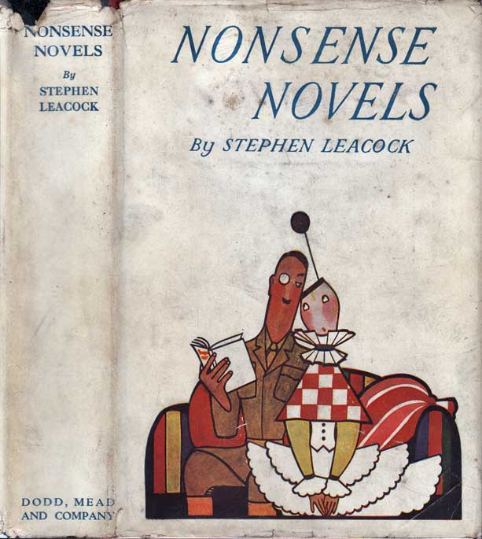

0
стр. з
0
сторінок

завантаження...

Стивен Ликок
Чепуховые романы
Перевел Сергей Андреевский
Метод чтения Ильи Франка
Сontents
Maddened by Mystery: or, The Defective Detective
(Помешавшийся на преступлениях, или ненормальный детектив; mystery — таинство /рел./; тайна; defective — имеющий недостатки, дефекты; неполноценный).
THE great detective sat in his office (великий сыщик сидел в своей конторе; to sit). He wore a long green gown (одет он был в длинный зеленый халат; to wear — носить /одежду/) and half a dozen secret badges pinned to the outside of it (с наружной стороны которого булавками были приколоты полдюжины значков).
Three or four pairs of false whiskers hung on a whisker-stand beside him (позади него на подставке для бакенбард висели три-четыре пары фальшивых бакенбард; to hang).
Goggles, blue spectacles and motor glasses lay within easy reach (защитные, синие и автомобильные очки лежали так, чтобы до них легко можно было дотянуться: «в пределах легкой досягаемости»; to lie; reach — протягивание, вытягивание /руки/; досягаемость).
He could completely disguise himself at a second's notice (он мог бы полностью изменить свою внешность за секунду после сигнала /об опасности/; notice — сообщение, уведомление; предупреждение).
Half a bucket of cocaine and a dipper stood on a chair at his elbow (полведра кокаина и ковш стояли на стуле у его локтя; to stand).
His face was absolutely impenetrable (его лицо было совершенно непроницаемым).
whiskers ['wIskqz], glasses [glQ:sIz], disguise [dIs'gaIz]
THE great detective sat in his office. He wore a long green gown and half a dozen secret badges pinned to the outside of it.
Three or four pairs of false whiskers hung on a whisker-stand beside him.
Goggles, blue spectacles and motor glasses lay within easy reach.
He could completely disguise himself at a second's notice.
Half a bucket of cocaine and a dipper stood on a chair at his elbow.
His face was absolutely impenetrable.
A pile of cryptograms lay on the desk (кипа шифрограмм лежала на столе). The Great Detective hastily tore them open one after the other, solved them (Великий Сыщик торопливо вскрывал одну за другой, расшифровывал: «решал» их; to tear — рвать, разрывать), and threw them down the cryptogram-shute at his side (и бросал в шифрограммопровод сбоку от себя; to throw; at one’s side — сбоку от кого-л.; shute = chute — крутой скат; спускной желоб).
There was a rap at the door (раздался стук в дверь).
The Great Detective hurriedly wrapped himself in a pink domino (Великий Сыщик поспешно завернулся в розовое домино), adjusted a pair of false black whiskers and cried (приладил пару фальшивых черных бакенбард и крикнул),
"Come in (войдите)."
His secretary entered (вошел его секретарь). "Ha," said the detective, "it is you (а, — сказал сыщик, — это вы)!"
He laid aside his disguise (он отложил свою маскировку в сторону; to lay).
"Sir," said the young man in intense excitement (сэр, — сказал молодой человек в сильном волнении), "a mystery has been committed (совершено загадочное /преступление/)!"
"Ha!" said the Great Detective, his eye kindling (ха! — сказал Великий Сыщик с загоревшимися глазами), "is it such as to completely baffle the police of the entire continent (не такое ли, что совершенно сбивает с толку полицию всего континента)?"
cryptogram ['krIptqgrxm], shute [Su:t], excitement [Ik'saItmqnt]
A pile of cryptograms lay on the desk. The Great Detective hastily tore them open one after the other, solved them, and threw them down the cryptogram-shute at his side.
There was a rap at the door.
The Great Detective hurriedly wrapped himself in a pink domino, adjusted a pair of false black whiskers and cried,
"Come in."
His secretary entered. "Ha," said the detective, "it is you!"
He laid aside his disguise.
"Sir," said the young man in intense excitement, "a mystery has been committed!"
"Ha!" said the Great Detective, his eye kindling, "is it such as to completely baffle the police of the entire continent?"
"They are so completely baffled with it," said the secretary (они настолько сбиты им с толку, — сказал секретарь), "that they are lying collapsed in heaps (что грудами лежат вповалку; to collapse — рушиться, обваливаться; свалиться /от удара, напряжения и т.п./); many of them have committed suicide (многие из них уже совершили самоубийство)."
"So," said the detective, "and is the mystery one (следовательно, — сказал сыщик, — это такое загадочное преступление) that is absolutely unparalleled in the whole recorded annals of the London police (которое совершенно не имеет зарегистрированных прецедентов за всю историю лондонской полиции; annals — хроники, анналы)?"
"It is (так и есть)."
"And I suppose," said the detective (и я полагаю, — сказал сыщик), "that it involves names which you would scarcely dare to breathe (что здесь замешаны имена, которые едва осмеливаешься произнести шепотом; to involve — вовлекать, впутывать; to breath — дышать; говорить тихо, шептать), at least without first using some kind of atomiser or throat-gargle (во всяком случае, не без того, чтобы сперва использовать что-то вроде аэрозоли или полоскания для горла)."
"Exactly (точно так)."
suicide ['s(j)u:IsaId], annals ['xn(q)lz], breathe /v./ [bri:D]
"They are so completely baffled with it," said the secretary, "that they are lying collapsed in heaps; many of them have committed suicide."
"So," said the detective, "and is the mystery one that is absolutely unparalleled in the whole recorded annals of the London police?"
"It is."
"And I suppose," said the detective, "that it involves names which you would scarcely dare to breathe, at least without first using some kind of atomiser or throat-gargle."
"Exactly."
"And it is connected, I presume, with the highest diplomatic consequences (и связано оно, как я предполагаю, с /такими/ критическими дипломатическими последствиями; high — высокий; серьезный, решающий), so that if we fail to solve it (что если нам не удастся раскрыть: «решить» его) England will be at war with the whole world in sixteen minutes (Англия окажется в /состоянии/ войны с целым миром через шестнадцать минут)?"
His secretary, still quivering with excitement, again answered yes (его секретарь, все еще трепеща от волнения, снова ответил утвердительно).
"And finally," said the Great Detective (и наконец, — сказал Великий Сыщик), "I presume that it was committed in broad daylight (как я предполагаю, оно было совершено средь бела дня; in broad daylight — при дневном свете, при свете дня), in some such place as the entrance of the Bank of England (в таком каком-то месте, как, /например/, Английский банк), or in the cloak-room of the House of Commons, and under the very eyes of the police (или в гардеробе Палаты общин и на самом виду у полиции; eye — глаз, око; взгляд, взор)?"
"Those," said the secretary, "are the very conditions of the mystery (это, — сказал секретарь, — истинные обстоятельства этой головоломки; mystery — таинственность; загадка, тайна)."
presume [prI'zju:m], consequences ['kOnsIkwqnt], entrance ['entrqns]
"And it is connected, I presume, with the highest diplomatic consequences, so that if we fail to solve it England will be at war with the whole world in sixteen minutes?"
His secretary, still quivering with excitement, again answered yes.
"And finally," said the Great Detective, "I presume that it was committed in broad daylight, in some such place as the entrance of the Bank of England, or in the cloak-room of the House of Commons, and under the very eyes of the police?"
"Those," said the secretary, "are the very conditions of the mystery."
"Good," said the Great Detective, "now wrap yourself in this disguise (хорошо, — сказал Великий Сыщик, — а теперь завернитесь в этот маскировочный /костюм/), put on these brown whiskers and tell me what it is (приклейте бакенбарды и расскажите мне, в чем она заключается; to put on — надевать)."
The secretary wrapped himself in a blue domino with lace insertions (секретарь завернулся в голубое домино с кружевными вставками), then, bending over, he whispered in the ear of the Great Detective (затем, наклонившись, прошептал в ухо Великому Сыщику):
"The Prince of Wurttemberg has been kidnapped (похищен Принц Вюртембергский)."
The Great Detective bounded from his chair as if he had been kicked from below (Великий Сыщик вскочил со стула, как если бы его снизу пнули ногой).
A prince stolen (украден принц; to steal)! Evidently a Bourbon (несомненно, какой-нибудь Бурбон)! The scion of one of the oldest families in Europe kidnapped (похищен отпрыск одного из древнейших родов в Европе; family — семья; род, фамилия). Here was a mystery indeed worthy of his analytical brain (в самом деле, то была загадка, достойная его аналитического ума).
wrap [rxp], whisper ['wIspq], Bourbon ['buqb(q)n]
"Good," said the Great Detective, "now wrap yourself in this disguise, put on these brown whiskers and tell me what it is."
The secretary wrapped himself in a blue domino with lace insertions, then, bending over, he whispered in the ear of the Great Detective:
"The Prince of Wurttemberg has been kidnapped."
The Great Detective bounded from his chair as if he had been kicked from below.
A prince stolen! Evidently a Bourbon! The scion of one of the oldest families in Europe kidnapped. Here was a mystery indeed worthy of his analytical brain.
His mind began to move like lightning (/мысли/ в его мозгу начал метаться подобно молниям; to move — двигаться, передвигаться; приходить в движение).
"Stop!" he said, "how do you know this (остановитесь = погодите, — сказал он, — откуда вам это известно)?"
The secretary handed him a telegram (секретарь протянул ему телеграмму). It was from the Prefect of Police of Paris (она была от перфекта полиции Парижа). It read: "The Prince of Wurttemberg stolen (она гласила: “Принц Вюртембергский украден”; to read — читать; гласить). Probably forwarded to London (возможно переправлен в Лондон). Must have him here for the opening day of Exhibition (должен быть здесь ко дню открытия Выставки). 1,000 pounds reward (награда тысяча фунтов)."
So! The Prince had been kidnapped out of Paris at the very time (так! Принц был похищен из Парижа в тот самый момент) when his appearance at the International Exposition would have been a political event of the first magnitude (когда его присутствие на Международной выставке было бы политическим событием перво/степенной/ важности).
With the Great Detective to think was to act, and to act was to think (для Великого Сыщика думать значило действовать, а действовать означало думать).
lightning ['laItnIN], Paris ['pxrIs], magnitude ['mxgnItju:d]
His mind began to move like lightning.
"Stop!" he said, "how do you know this?"
The secretary handed him a telegram. It was from the Prefect of Police of Paris. It read: "The Prince of Wurttemberg stolen. Probably forwarded to London. Must have him here for the opening day of Exhibition. 1,000 pounds reward."
So! The Prince had been kidnapped out of Paris at the very time when his appearance at the International Exposition would have been a political event of the first magnitude.
With the Great Detective to think was to act, and to act was to think.
Frequently he could do both together (часто он мог делать и то и другое одновременно; both — оба, и тот и другой; together — вместе; одновременно).
"Wire to Paris for a description of the Prince (телеграфируйте в Париж, чтобы /прислали/ описание = приметы Принца; to wire — связывать/скреплять проволокой; телеграфировать)."
The secretary bowed and left (секретарь поклонился и вышел).
At the same moment there was slight scratching at the door (в тот же миг послышалось легкое царапанье по двери).
A visitor entered (вошел = появился посетитель). He crawled stealthily on his hands and knees (крадучись, он полз на четвереньках: «на своих руках и коленях»). A hearthrug thrown over his head and shoulders disguised his identity (каминный коврик, наброшенный на голову и плечи, скрывал его личность; to throw; identity — тождественность, идентичность; личность).
He crawled to the middle of the room (он дополз до середины комнаты).
Then he rose (затем он поднялся; to rise).
Great Heaven (великий Боже)!
It was the Prime Minister of England (то был премьер-министр Англии).
"You!" said the detective (вы! — сказал = воскликнул сыщик).
"Me," said the Prime Minister (я, — сказал премьер-министр).
hearthrug ['hQ:TrAg], identity [aI'dentItI], Heaven ['hev(q)n]
Frequently he could do both together.
"Wire to Paris for a description of the Prince."
The secretary bowed and left.
At the same moment there was slight scratching at the door.
A visitor entered. He crawled stealthily on his hands and knees. A hearthrug thrown over his head and shoulders disguised his identity.
He crawled to the middle of the room.
Then he rose.
Great Heaven!
It was the Prime Minister of England.
"You!" said the detective.
"Me," said the Prime Minister.
"You have come in regard the kidnapping of the Prince of Wurttemberg (вы пришли в связи с похищением Принца Вюртембергского; in regard — потому что, вследствие того что)?"
The Prime Minister started (премьер-министр вздрогнул; to start — бросаться, вскакивать; вздрагивать, содрогаться).
"How do you know?" he said (откуда вы знаете? — спросили он).
The Great Detective smiled his inscrutable smile (Великий Сыщик улыбнулся своей загадочной улыбкой).
"Yes," said the Prime Minister (да, — сказал премьер-министр). "I will use no concealment (не стану ничего скрывать; to use — использовать, применять; concealment — сокрытие, утаивание). I am interested, deeply interested (я заинтересован, крайне заинтересован; deeply — глубоко; сильно, очень). Find the Prince of Wurttemberg, get him safe back to Paris (найдите Принца Вюртембергского, доставьте его невредимым назад в Париж; to get back — возвращать) and I will add 500 pounds to the reward already offered (и я прибавлю пятьсот фунтов к уже предложенной награде). But listen," he said impressively as he left the room (но запомните: «послушайте», — сказал он многозначительно, когда покидал комнату; impressive — впечатляющий; выразительный), "see to it that no attempt is made to alter the marking of the prince, or to clip his tail (позаботьтесь о том, чтобы не было сделано никаких попыток изменить окрас принца или купировать ему хвост; see to it — позаботиться о чем-л.; marking — маркировка, разметка; расцветка, окраска /животных, растений/)."
inscrutable [In'skru:tqb(q)l], concealment [kqn'si:lmqnt], reward [rI'wO:d]
"You have come in regard the kidnapping of the Prince of Wurttemberg?"
The Prime Minister started.
"How do you know?" he said.
The Great Detective smiled his inscrutable smile.
"Yes," said the Prime Minister. "I will use no concealment. I am interested, deeply interested. Find the Prince of Wurttemberg, get him safe back to Paris and I will add 500 pounds to the reward already offered. But listen," he said impressively as he left the room, "see to it that no attempt is made to alter the marking of the prince, or to clip his tail."
So! To clip the Prince's tail (вот как! купировать Принцу хвост)! The brain of the Great Detective reeled (мозг Великого Сыщика загудел; to reel — кружиться, вертеться; дрожать, вибрировать). So! a gang of miscreants had conspired to (вот как! банда негодяев замыслила…; to conspire — сговариваться, устраивать заговор) —but no! the thing was not possible (но нет! такого не может быть: «эта вещь была невозможной»).
There was another rap at the door (снова послышался стук в дверь; another — другой, еще один).
A second visitor was seen (показался второй посетитель). He wormed his way in, lying almost prone upon his stomach (он вполз внутрь, лежа почти что плашмя на животе; way — дорога, путь), and wriggling across the floor (и извиваясь по полу). He was enveloped in a long purple cloak (он был завернут в длинный пурпурный плащ). He stood up and peeped over the top of it (он поднялся и выглянул из-под него; to stand; to peep — заглядывать, подглядывать; выглядывать; top — верхушка, вершина; верхний конец).
Great Heaven (Боже милостивый)!
It was the Archbishop of Canterbury (то был архиепископ Кентерберийский)!
miscreant ['mIskrIqnt], conspire [kqn'spaIq], Canterbury ['kxntqb(q)rI]
So! To clip the Prince's tail! The brain of the Great Detective reeled. So! a gang of miscreants had conspired to—but no! the thing was not possible.
There was another rap at the door.
A second visitor was seen. He wormed his way in, lying almost prone upon his stomach, and wriggling across the floor. He was enveloped in a long purple cloak. He stood up and peeped over the top of it.
Great Heaven!
It was the Archbishop of Canterbury!
"Your Grace!" exclaimed the detective in amazement (Ваша милость, — воскликнул сыщик в изумлении) —"pray do not stand, I beg you (молю вас, умоляю, не вставайте; to pray — молиться; молить, умолять). Sit down, lie down, anything rather than stand (садитесь, ложитесь, только не вставайте)."
The Archbishop took off his mitre and laid it wearily on the whisker-stand (архиепископ снял свою митру и устало повесил: «положил» ее на подставку для бакенбард; to take off — снимать, сбрасывать).
"You are here in regard to the Prince of Wurttemberg (вы здесь по поводу Принца Вюртембергского)."
The Archbishop started and crossed himself (архиепископ вздрогнул и перекрестился). Was the man a magician (неужто этот человек волшебник)?
"Yes," he said, "much depends on getting him back (да, — сказал он, — многое зависит от его возвращения). But I have only come to say this: my sister is desirous of seeing you (но я пришел только для того, чтобы сказать вам: моя сестра жаждет видеть вас). She is coming here (она идет сюда). She has been extremely indiscreet and her fortune hangs upon the Prince (она была крайне неосмотрительна и ее состояние полностью зависит от Принца; to hang upon smth. — зависеть от чего-л.; fortune — удача, счастливый случай; богатство, состояние). Get him back to Paris or I fear she will be ruined (доставьте его назад в Париж, иначе, боюсь, она будет разорена; to ruin — рушиться; разорять)."
exclaim [Ik'skleIm], mitre ['maItq], desirous [dI'zaI(q)rqs]
"Your Grace!" exclaimed the detective in amazement—"pray do not stand, I beg you. Sit down, lie down, anything rather than stand."
The Archbishop took off his mitre and laid it wearily on the whisker-stand.
"You are here in regard to the Prince of Wurttemberg."
The Archbishop started and crossed himself. Was the man a magician?
"Yes," he said, "much depends on getting him back. But I have only come to say this: my sister is desirous of seeing you. She is coming here. She has been extremely indiscreet and her fortune hangs upon the Prince. Get him back to Paris or I fear she will be ruined."
The Archbishop regained his mitre (архиепископ вернул на место свою митру; to regain — получить обратно, вновь обрести), uncrossed himself, wrapped his cloak about him (перекрестился наоборот, обернул плащ вокруг себя), and crawled stealthily out on his hands and knees, purring like a cat (и, крадучись, пополз на четвереньках, мурлыча, как кот).
The face of the Great Detective showed the most profound sympathy (лицо Великого Сыщика выражало: «показывало» самое глубокое сочувствие; sympathy — расположение, симпатия; сочувствие, сострадание). It ran up and down in furrows (по нему вверх-вниз забегали морщинки; to run). "So," he muttered, "the sister of the Archbishop, the Countess of Dashleigh (значит, — пробормотал он, — сестра архиепископа, графиня Дэшли)!" Accustomed as he was to the life of the aristocracy, even the Great Detective felt (хоть и будучи знакомым с жизнью аристократии, Великий Сыщик почувствовал; to feel) that there was here intrigue of more than customary complexity (что здесь интрига будет посложнее обычного).
There was a loud rapping at the door (раздался громкий стук в дверь).
There entered the Countess of Dashleigh (вошла графиня Дэшли). She was all in furs (вся она была в мехах).
She was the most beautiful woman in England (она была самой красивой женщиной в Англии).
knee [ni:], sympathy ['sImpqTI], intrigue [In'tri:g], customary ['kAstqm(q)rI]
The Archbishop regained his mitre, uncrossed himself, wrapped his cloak about him, and crawled stealthily out on his hands and knees, purring like a cat.
The face of the Great Detective showed the most profound sympathy. It ran up and down in furrows. "So," he muttered, "the sister of the Archbishop, the Countess of Dashleigh!" Accustomed as he was to the life of the aristocracy, even the Great Detective felt that there was here intrigue of more than customary complexity.
There was a loud rapping at the door.
There entered the Countess of Dashleigh. She was all in furs.
She was the most beautiful woman in England.
She strode imperiously into the room (величаво она шагнула в комнату; to stride; imperious — повелительный, властный; величественный). She seized a chair imperiously and seated herself on it, imperial side up (величаво схватила стул и уселась на него, величавым профилем /к сыщику/; side — сторона, часть /чего-л./; бок /туловища/).
She took off her tiara of diamonds and put it on the tiara-holder beside her (она сняла свою бриллиантовую тиару и повесила: «положила» ее на подставку для тиар, /стоявшую/ рядом с нею) and uncoiled her boa of pearls and put it on the pearl-stand (размотала свое боа из жемчуга и повесила его на подставку для жемчугов).
"You have come," said the Great Detective, "about the Prince of Wurttemberg (вы пришли, — сказал Великий Сыщик, — насчет Принца Вюртембергского)."
"Wretched little pup!" said the Countess of Dashleigh in disgust (негодный маленький щенок! — раздраженно сказала графиня Дэшли; disgust — отвращение, омерзение; недовольство, раздражение).
So! A further complication (вот как! новое осложнение; further — дальнейший; дополнительный, добавочный)! Far from being in love with the Prince (не будучи отнюдь влюбленной в Принца; far from — далеко не; to be in love — любить, быть влюбленным), the Countess denounced the young Bourbon as a pup (графиня обозвала юного Бурбона щенком; to denounce — осуждать, обвинять)!
imperiously [Im'pI(q)rIqslI], seize [si:z], denounce [dI'nauns]
She strode imperiously into the room. She seized a chair imperiously and seated herself on it, imperial side up.
She took off her tiara of diamonds and put it on the tiara-holder beside her and uncoiled her boa of pearls and put it on the pearl-stand.
"You have come," said the Great Detective, "about the Prince of Wurttemberg."
"Wretched little pup!" said the Countess of Dashleigh in disgust.
So! A further complication! Far from being in love with the
Prince, the Countess denounced the young Bourbon as a pup!
"You are interested in him, I believe (вас интересует его пропажа: «вы заинтересованы в нем», я полагаю; to believe)."
"Interested!" said the Countess (интересует! — сказала графиня). "I should rather say so (еще как, я бы сказала; I should say so — еще бы! конечно! rather — лучше, скорее; весьма, в значительной степени). Why, I bred him (ведь я же его вскормила; to breed — вынашивать /детенышей/, высиживать /птенцов/; вскармливать)!"
"You which?" gasped the Great Detective (вы что? — Великий Сыщик задохнулся /от удивления/), his usually impassive features suffused with a carmine blush (его обычно бесстрастное лицо залилось пунцовым румянцем; features — черты лица).
"I bred him," said the Countess, "and I've got 10,000 pounds upon his chances (я вскормила его, — сказала графиня, — и я поставила на него десять тысяч фунтов; chance — случай, случайность; счастливый случай, удача), so no wonder I want him back in Paris (так что не удивительно, что я хочу вернуть его в Париж). Only listen," she said, "if they've got hold of the Prince (только запомните: «послушайте», — сказала она, — если они схватили Принца; to get hold of — схватить /что-л., кого-л./, завладеть /чем-л./) and cut his tail or spoiled the markings of his stomach (и купировали ему хвост или испортили отметины на животе) it would be far better to have him quietly put out of the way here (то было бы намного лучше по-тихому вообще его убрать; far — далеко, на большом расстоянии; гораздо, намного; to put out — удалять, устранять; way — путь, дорога; область, сфера /деятельности/)."
rather ['rQ:Dq], features ['fi:tSqz], carmine ['kQ:mIn, 'kQ:maIn]
"You are interested in him, I believe."
"Interested!" said the Countess. "I should rather say so. Why,
I bred him!"
"You which?" gasped the Great Detective, his usually impassive features suffused with a carmine blush.
"I bred him," said the Countess, "and I've got 10,000 pounds upon his chances, so no wonder I want him back in Paris. Only listen," she said, "if they've got hold of the Prince and cut his tail or spoiled the markings of his stomach it would be far better to have him quietly put out of the way here."
The Great Detective reeled and leaned up against the side of the room (Великий Сыщик зашатался и прислонился к стене «комнаты»; side — сторона; стенка, стена). So! The cold-blooded admission of the beautiful woman for the moment took away his breath (вот как! от хладнокровного признания этой прекрасной женщины у него на мгновение перехватило дыхание; to take away — забирать, отнимать)! Herself the mother of the young Bourbon (сама мать молодого Бурбона), misallied with one of the greatest families of Europe (неподходящим образом связанная с одной из величайших в Европе фамилий; to misally — заключать неподходящий/незаконный союз, сравните: mésalliance, misalliance — неравный брак, мезальянс), staking her fortune on a Royalist plot (ставящая свое состояние на какой-то роялистский заговор; plot — надел, участок земли; интрига, заговор), and yet with so instinctive a knowledge of European politics (да еще /обладающая/ таким интуитивным знанием европейской политики) as to know that any removal of the hereditary birth-marks of the Prince (чтобы понимать, что удаление наследственных родимых пятен Принца; to know — знать; понимать) would forfeit for him the sympathy of the French populace (лишит его расположения французского народа; populace — простой народ, массы).
cold-blooded ["kquld'blAdId], misally ["mIsq'laI], fortune ['fO:tS(q)n]
The Great Detective reeled and leaned up against the side of the room. So! The cold-blooded admission of the beautiful woman for the moment took away his breath! Herself the mother of the young Bourbon, misallied with one of the greatest families of Europe, staking her fortune on a Royalist plot, and yet with so instinctive a knowledge of European politics as to know that any removal of the hereditary birth-marks of the Prince would forfeit for him the sympathy of the French populace.
The Countess resumed her tiara (графиня надела тиару; to resume — брать обратно, вновь обретать).
She left (она ушла).
The secretary re-entered (снова вошел секретарь).
"I have three telegrams from Paris," he said, "they are completely baffling (у меня три телеграммы из Парижа, — сказал он, — они совершенно непонятны; to baffle — опозорить; озадачивать, сбивать с толку)."
He handed over the first telegram (он протянул первую телеграмму; to hand over — передавать).
It read (она гласила):
"The Prince of Wurttemberg has a long, wet snout (у Принца Вюртембергского длинная слюнявая морда; wet — мокрый, влажный), broad ears, very long body, and short hind legs (широкие = большие висячие уши, очень длинное туловище и короткие задние ноги)."
The Great Detective looked puzzled (Великий Сыщик выглядел озадаченно).
He read the second telegram (он прочитал вторую телеграмму).
"The Prince of Wurttemberg is easily recognised by his deep bark (Принца Вюртембергского можно опознать по его глухому лаю; deep — глубокий; низкий, глухой /о звуке/)."
baffle ['bxf(q)l], puzzle ['pAz(q)l], recognise ['rekqgnaIz]
The Countess resumed her tiara.
She left.
The secretary re-entered.
"I have three telegrams from Paris," he said, "they are completely baffling."
He handed over the first telegram.
It read:
"The Prince of Wurttemberg has a long, wet snout, broad ears, very long body, and short hind legs."
The Great Detective looked puzzled.
He read the second telegram.
"The Prince of Wurttemberg is easily recognised by his deep bark."
And then the third (и третью).
"The Prince of Wurttemberg can be recognised by a patch of white hair across the centre of his back (Принца Вюртембергского можно опознать по белому пятну на шерсти посередине: «в центре» спины; hair — волосы; шерсть /животного/; patch — клочок, лоскут; небольшой участок, пятно /неправильной формы/)."
The two men looked at one another (двое мужчин = мужчины посмотрели друг на друга). The mystery was maddening, impenetrable (тайна /своей/ непроницаемостью сводила с ума: «была сводящей с ума, непроницаемой»).
The Great Detective spoke (Великий Сыщик заговорил).
"Give me my domino," he said (дайте мне мое домино, — сказал он). "These clues must be followed up (нужно следовать этим подсказкам; clue — клубок, моток /ниток, пряжи/; путеводная нить; сведение, информация)," then pausing, while his quick brain analysed and summed up the evidence before him (затем помолчав, пока его мозг быстро анализировал и суммировал факты; evidence — ясность, очевидность; данные, факты; evident — очевидный) —"a young man," he muttered, "evidently young since described as a 'pup,' with a long, wet snout (молодой человек, — пробормотал он, — очевидно молодой, поскольку его описывали как “щенка” с длинной слюнявой мордой) (ha! addicted obviously to drinking (ха! склонен, несомненно, к пьянству)), a streak of white hair across his back (полоска седых волос на спине; white — белый; седой) (a first sign of the results of his abandoned life (первый признак последствий его беспутного образа жизни; sign — знак, символ; признак, примета; abandoned — заброшенный, покинутый; несдержанный, безудержный; life — жизнь, существование; образ жизни)) —yes, yes," he continued, "with this clue I shall find him easily (да-да, — продолжал он, — с такой подсказкой я легко его отыщу)."
impenetrable [Im'penItrqb(q)l], analyse ['xnqlaIz], abandon [q'bxndqn]
And then the third.
"The Prince of Wurttemberg can be recognised by a patch of white hair across the centre of his back."
The two men looked at one another. The mystery was maddening, impenetrable.
The Great Detective spoke.
"Give me my domino," he said. "These clues must be followed up," then pausing, while his quick brain analysed and summed up the evidence before him—"a young man," he muttered, "evidently young since described as a 'pup,' with a long, wet snout (ha! addicted obviously to drinking), a streak of white hair across his back (a first sign of the results of his abandoned life)—yes, yes," he continued, "with this clue I shall find him easily."
The Great Detective rose (Великий Сыщик встал).
He wrapped himself in a long black cloak with white whiskers and blue spectacles attached (он завернулся в длинный черный плащ, нацепил седые бакенбарды и надел очки; to attach — прикреплять, присоединять).
Completely disguised, he issued forth (совершенно неузнаваемый: «полностью замаскированный» он вышел на улицу; forth — вперед; наружу).
He began the search (он начал поиски).
For four days he visited every corner of London (в течение четырех дней он побывал во всех уголках: «посетил каждый уголок» Лондона).
He entered every saloon in the city (он заходил: «входил» во все питейные заведения в сити). In each of them he drank a glass of rum (в каждом из них он выпивал стакан рому). In some of them he assumed the disguise of a sailor (в одних он появлялся, переодевшись моряком: «в одних из них он принимал маскировку моряка»). In others he entered as a soldier (в другие он входил в форме солдата; as — как, в качестве). Into others he penetrated as a clergyman (в третьи он проникал под видом священника). His disguise was perfect (его маскировка была безупречной). Nobody paid any attention to him as long as he had the price of a drink (никто не обращал на него внимания, пока у него было чем расплатиться за выпивку: «пока у него была цена выпивки»; to pay attention — обращать внимание; as long as — до тех пор пока; так как, поскольку).
search [sE:tS], saloon [sq'lu:n], clergyman ['klE:dZImqn]
The Great Detective rose.
He wrapped himself in a long black cloak with white whiskers and blue spectacles attached.
Completely disguised, he issued forth.
He began the search.
For four days he visited every corner of London.
He entered every saloon in the city. In each of them he drank a glass of rum. In some of them he assumed the disguise of a sailor. In others he entered as a soldier. Into others he penetrated as a clergyman. His disguise was perfect. Nobody paid any attention to him as long as he had the price of a drink.
The search proved fruitless (поиски оказались безуспешными; to prove — испытывать, пробовать /устар./; доказывать; оказываться; fruitless — бесплодный; безрезультатный, безуспешный).
Two young men were arrested under suspicion of being the Prince, only to be released (двух молодых людей приняли за Принца; они были арестованы, но /потом/ отпущены; under suspicion — по подозрению).
The identification was incomplete in each case (в обоих случаях приметы не совпадали полностью: «отождествление было неполным в каждом случае»).
One had a long wet snout but no hair on his back (у одного была длинная слюнявая морда, но не было волос на спине).
The other had hair on his back but couldn't bark (у другого были волосы на спине, но /он/ не умел лаять).
Neither of them was the young Bourbon (ни один из них не был молодым Бурбоном).
The Great Detective continued his search (Великий Сыщик продолжал поиски).
He stopped at nothing (он не останавливался ни перед чем).
Secretly, after nightfall, he visited the home of the Prime Minister (тайно, после наступления ночи, он посетил дом премьер-министра). He examined it from top to bottom (он обследовал его сверху донизу).
prove [pru:v], fruitless ['fru:tlIs], incomplete ["Inkqm'pli:t]
The search proved fruitless.
Two young men were arrested under suspicion of being the Prince, only to be released.
The identification was incomplete in each case.
One had a long wet snout but no hair on his back.
The other had hair on his back but couldn't bark.
Neither of them was the young Bourbon.
The Great Detective continued his search.
He stopped at nothing.
Secretly, after nightfall, he visited the home of the Prime Minister. He examined it from top to bottom.
He measured all the doors and windows (измерил все двери и окна). He took up the flooring (поднял настил полов; to take up — поднимать). He inspected the plumbing (осмотрел водопровод). He examined the furniture (обследовал мебель). He found nothing (и не нашел ничего).
With equal secrecy he penetrated into the palace of the Archbishop (так же скрытно: «с той же таинственностью» он проник во дворец архиепископа). He examined it from top to bottom (обыскал его сверху донизу). Disguised as a choir-boy he took part in the offices of the church (переодевшись мальчиком-хористом участвовал в церковных службах; to take part — принимать участие). He found nothing (не обнаружил ничего).
Still undismayed, the Great Detective made his way into the home of the Countess of Dashleigh (все еще не теряя надежды, Великий Сыщик отправился в дом графини Дэшли; to dismay — приводить в смятение, лишать мужества; to make one’s way — направляться /куда-л./). Disguised as a housemaid, he entered the service of the Countess (переодевшись горничной, поступил на службу к графине; to enter — входить, проникать /в какое-л. помещение/; поступать /на службу/).
measure ['meZq], church [tSE:tS], countess ['kauntIs]
He measured all the doors and windows. He took up the flooring. He inspected the plumbing. He examined the furniture. He found nothing.
With equal secrecy he penetrated into the palace of the Archbishop. He examined it from top to bottom. Disguised as a choir-boy he took part in the offices of the church. He found nothing.
Still undismayed, the Great Detective made his way into the home of the Countess of Dashleigh. Disguised as a housemaid, he entered the service of the Countess.
Then at last a clue came which gave him a solution of the mystery (тут наконец и обнаружилось /то/, что дало ему ключ к решению загадки).
On the wall of the Countess's boudoir was a large framed engraving (на стене в будуаре графини в большой раме висела гравюра).
It was a portrait (это был портрет).
Under it was a printed legend (под ним была печатная надпись; legend — легенда, предание; надпись /на монете, гравюре/):
THE PRINCE OF WURTTEMBERG (ПРИНЦ ВЮРТЕМБЕРГСКИЙ).
The portrait was that of a Dachshund (это был портрет таксы).
The long body, the broad ears, the unclipped tail, the short hind legs—all was there (длинное туловище, большие висячие уши, некупированный хвост, короткие задние ноги — все было на месте: «все было там»).
In a fraction of a second the lightning mind of the Great Detective had penetrated the whole mystery (за долю секунды молниеносному разуму Великого Сыщика открылась вся /суть/ этой загадки; to penetrate — проникать внутрь; понимать, постигать).
THE PRINCE WAS A DOG (Принц был собакой)!!!!
boudoir ['bu:dwQ:], portrait ['pO:trIt], ear [Iq]
Then at last a clue came which gave him a solution of the mystery.
On the wall of the Countess's boudoir was a large framed engraving.
It was a portrait.
Under it was a printed legend:
THE PRINCE OF WURTTEMBERG
The portrait was that of a Dachshund.
The long body, the broad ears, the unclipped tail, the short hind legs—all was there.
In a fraction of a second the lightning mind of the Great Detective had penetrated the whole mystery.
THE PRINCE WAS A DOG!!!!
Hastily throwing a domino over his housemaid's dress, he rushed to the street (торопливо набросив домино поверх платья горничной, он устремился на улицу). He summoned a passing hansom, and in a few moments was at his house (он подозвал проезжавшую мимо пролетку и через несколько мгновений оказался у себя в конторе; house — дом, здание; заведение, учреждение).
"I have it," he gasped to his secretary (я нашел ответ; to have it — найти решение, догадаться). "The mystery is solved (загадка решена). I have pieced it together (я собрал все по крупинкам; to piece together — соединять, собирать по кусочкам). By sheer analysis I have reasoned it out (посредством абсолютного анализа я пришел к решению; to reason smth. out — доходить своим умом до чего-л.).
Listen—hind legs, hair on back, wet snout, pup (слушайте: задние ноги, шерсть на спине, слюнявая морда, щенок) —eh, what? does that suggest nothing to you (а, что? это вам ни о чем не говорит; to suggest — предлагать, советовать; намекать, наводить на мысль)?"
"Nothing," said the secretary; "it seems perfectly hopeless (ни о чем, — сказал секретарь, — /дело/ кажется мне совершенно безнадежным)."
domino ['dOmInqu], piece [pi:s], analysis [q'nxlIsIs]
Hastily throwing a domino over his housemaid's dress, he rushed to the street. He summoned a passing hansom, and in a few moments was at his house.
"I have it," he gasped to his secretary. "The mystery is solved.
I have pieced it together. By sheer analysis I have reasoned it out.
Listen—hind legs, hair on back, wet snout, pup—eh, what? does that suggest nothing to you?"
"Nothing," said the secretary; "it seems perfectly hopeless."
The Great Detective, now recovered from his excitement, smiled faintly (Великий Сыщик, теперь уже оправившийся от волнения, слегка улыбнулся; to recover — вновь обретать, получать обратно; оправляться /от болезни/, приходить в себя; faintly — бледно, слабо; едва, еле-еле).
"It means simply this, my dear fellow (это означает просто вот что, мой дорогой друг). The Prince of Wurttemberg is a dog, a prize Dachshund (Принц Вюртембергский — это собака, призовая такса). The Countess of Dashleigh bred him, and he is worth some 25,000 pounds (графиня Дэшли выкормила его, и он стоит около двадцати пяти тысяч фунтов) in addition to the prize of 10,000 pounds offered at the Paris dog show (вдобавок к десяти тысячам призовых, назначенных /за победу/ на парижской выставке собак; to offer — предлагать; назначать, предлагать /цену/; show — показ, демонстрация; выставка). Can you wonder that (стоит ли удивляться, что) ——"
At that moment the Great Detective was interrupted by the scream of a woman (в этот момент Великого Сыщика прервал женский крик: «крик какой-то женщины»).
"Great Heaven (великий Боже)!"
excitement [Ik'saItmqnt], prize [praIz], pound [paund]
The Great Detective, now recovered from his excitement, smiled faintly.
"It means simply this, my dear fellow. The Prince of Wurttemberg is a dog, a prize Dachshund. The Countess of Dashleigh bred him, and he is worth some 25,000 pounds in addition to the prize of 10,000 pounds offered at the Paris dog show. Can you wonder that——"
At that moment the Great Detective was interrupted by the scream of a woman.
"Great Heaven!"
The Countess of Dashleigh dashed into the room (графиня Дэшли стремительно вбежала в комнату).
Her face was wild (выражение лица ее было совершенно безумным; wild — дикий /о животных, природе и т.п./; исступленный, безудержный).
Her tiara was in disorder (тиара неуклюже сидела у нее на голове: «ее тиара была в беспорядке»).
Her pearls were dripping all over the place (жемчужины рассыпались по всей комнате: «по всему месту»; to drip — капать, падать каплями).
She wrung her hands and moaned (она заламывала: «выкручивала» руки и стонала; to wring).
"They have cut his tail," she gasped, "and taken all the hair off his back (они купировали ему хвост, — задыхаясь /произнесла/ она, — и состригли всю шерсть со спины; to take off — убирать, удалять). What can I do? I am undone (что мне теперь делать: «что могу я сделать»? я разорена; to undo — возвращать /в прежнее положение/; разорять, доводить до разорения)!!"
"Madame," said the Great Detective, calm as bronze, "do yourself up (мадам, — сказал Великий Сыщик, спокойный, как бронзовая /статуя/, успокойтесь; to do up — приводить в порядок).
I can save you yet (я еще могу вас спасти)."
"You (вы)!"
"Me (я)!"
wild [waIld], moan [mqun], Madame ['mxdQ:m, mq'dQ:m]
The Countess of Dashleigh dashed into the room.
Her face was wild.
Her tiara was in disorder.
Her pearls were dripping all over the place.
She wrung her hands and moaned.
"They have cut his tail," she gasped, "and taken all the hair off his back. What can I do? I am undone!!"
"Madame," said the Great Detective, calm as bronze, "do yourself up. I can save you yet."
"You!"
"Me!"
"How (как)?"
"Listen (слушайте). This is how (вот как). The Prince was to have been shown at Paris (Принца должны были выставлять в Париже)."
The Countess nodded (графиня кивнула).
"Your fortune was staked on him (/все/ ваше состояние поставлено на него)?"
The Countess nodded again (графиня снова кивнула).
"The dog was stolen, carried to London, his tail cut and his marks disfigured (собаку украли, привезли в Лондон, обрезали хвост и испортили метки; to steal; to carry — нести, носить; перевозить, транспортировать)."
Amazed at the quiet penetration of the Great Detective (пораженная спокойствием и проницательностью Великого Сыщика; quiet — тихий, спокойный; penetration — проникание, проникновение; проницательность), the Countess kept on nodding and nodding (графиня все кивала и кивала /головой/; to keep on — продолжать /делать что-л./).
"And you are ruined (и вы разорены)?"
"I am," she gasped, and sank to the floor in a heap of pearls (да, — задыхаясь, прошептала она и опустилась на груду жемчужин; to sink — погружать/ся/ под воду, тонуть; опускаться, падать).
disfigure [dIs'fIgq], ruin ['ru:In], pearl [pE:l]
"How?"
"Listen. This is how. The Prince was to have been shown at Paris."
The Countess nodded.
"Your fortune was staked on him?"
The Countess nodded again.
"The dog was stolen, carried to London, his tail cut and his marks disfigured."
Amazed at the quiet penetration of the Great Detective, the Countess kept on nodding and nodding.
"And you are ruined?"
"I am," she gasped, and sank to the floor in a heap of pearls.
"Madame," said the Great Detective, "all is not lost (мадам, — сказал Великий Сыщик, — /еще/ не все потеряно)."
He straightened himself up to his full height (он распрямился в полный рост). A look of inflinchable unflexibility flickered over his features (выражение непоколебимой несгибаемости промелькнуло на его лице; look — взгляд; выражение /лица/; to flinch — отступать, уклоняться /от обязанности, трудности, неприятности/; to flicker — дрожать, трепетать; мелькнуть, промелькнуть).
The honour of England, the fortune of the most beautiful woman in England was at stake (на кону были честь Англии и состояние самой красивой ее представительницы: «самой красивой женщины в Англии»; at stake — поставленный на карту).
"I will do it," he murmured (я это сделаю, — пробормотал он).
"Rise dear lady," he continued (вставайте, дорогая леди, — продолжал он). "Fear nothing (ничего не бойтесь). I WILL IMPERSONATE THE DOG (я буду выдавать себя за собаку; to impersonate — олицетворять, воплощать; выдавать себя /за кого-л./)!!!"
That night the Great Detective might have been seen on the deck of the Calais packet boat with his secretary (тем же вечером Великого Сыщика с его секретарем можно было увидеть на палубе пакетбота из Кале).
unflexibility [An"fleksq'bIlItI], honour ['Onq], Calais [kx'leI, 'kxl(e)I]
"Madame," said the Great Detective, "all is not lost."
He straightened himself up to his full height. A look of inflinchable unflexibility flickered over his features.
The honour of England, the fortune of the most beautiful woman in
England was at stake.
"I will do it," he murmured.
"Rise dear lady," he continued. "Fear nothing. I WILL IMPERSONATE
THE DOG!!!"
That night the Great Detective might have been seen on the deck of the Calais packet boat with his secretary.
He was on his hands and knees in a long black cloak (в длинном черном плаще он стоял на четвереньках), and his secretary had him on a short chain (а секретарь держал его на коротком поводке: «на короткой цепочке»).
He barked at the waves exultingly and licked the secretary's hand (от восторга он лаял на волны и лизал руку секретаря).
"What a beautiful dog," said the passengers (какая прекрасная собака, — говорили пассажиры).
The disguise was absolutely complete (перевоплощение было абсолютно полным; disguise — изменение внешности, маскировка).
The Great Detective had been coated over with mucilage (Великого Сыщика покрыли слоем растительного клея; to coat — одевать; покрывать слоем /чего-л./) to which dog hairs had been applied (на который наложили собачью шерсть; to apply — прикладывать, накладывать; наносить). The markings on his back were perfect (отметина = белая полоска на спине получилась безупречно). His tail, adjusted with an automatic coupler (его хвост, снабженный автоматическим устройством связи; to adjust — пригонять, прилаживать), moved up and down responsive to every thought (двигался вверх-вниз, отзываясь на каждый мысленный /посыл/; responsive — чуткий, отзывчивый). His deep eyes were full of intelligence (его глубокие глаза были полны ума = в его больших глазах светился недюжинный ум; intelligence — понятливость, сообразительность; ум, интеллект).
exultingly [Ig'zAltINlI], mucilage ['mju:sIlIdZ], coupler ['kAplq]
He was on his hands and knees in a long black cloak, and his secretary had him on a short chain.
He barked at the waves exultingly and licked the secretary's hand.
"What a beautiful dog," said the passengers.
The disguise was absolutely complete.
The Great Detective had been coated over with mucilage to which dog hairs had been applied. The markings on his back were perfect. His tail, adjusted with an automatic coupler, moved up and down responsive to every thought. His deep eyes were full of intelligence.
Next day he was exhibited in the Dachshund class at the International show (на следующий день его выставили в группе такс на Международной выставке; class — класс, разряд; категория).
He won all hearts (он покорил все сердца; to win — выиграть, одержать победу; расположить к себе).
"Quel beau chien!" cried the French people (какая отличная собака! — восклицали французы: «французские люди»; Quel beau chien! — фраза на французском языке; to cry — кричать, вопить; восклицать).
"Ach! was ein Dog!" cried the Spanish (ах! что за собака! — восторгались испанцы; was ein — немецкий язык).
The Great Detective took the first prize (Великий Сыщик взял первый приз)!
The fortune of the Countess was saved (состояние графини было спасено).
Unfortunately as the Great Detective had neglected to pay the dog tax (к сожалению, поскольку Великий Сыщик не заплатил налога на собак; to neglect — пренебрегать /чем-л./, не заботиться /о чем-л./), he was caught and destroyed by the dog-catchers (его поймали и истребили собаколовы; to catch; to destroy — разрушать, разбивать; убивать, уничтожать). But that is, of course, quite outside of the present narrative (но это, конечно же, не имеет никакого отношения к данному повествованию: «находится всецело за пределами настоящего повествования»; present — присутствующий, имеющийся налицо; настоящий, нынешний), and is only mentioned as an odd fact in conclusion (и упоминается в заключение лишь как небезынтересное обстоятельство; odd — нечетный, непарный; странный, необычный).
Dachshund ['dxkshund, 'dxks(q)nd], unfortunately [An'fO:tSunItlI], narrative ['nxrqtIv]
Next day he was exhibited in the Dachshund class at the International show.
He won all hearts.
"Quel beau chien!" cried the French people.
"Ach! was ein Dog!" cried the Spanish.
The Great Detective took the first prize!
The fortune of the Countess was saved.
Unfortunately as the Great Detective had neglected to pay the dog tax, he was caught and destroyed by the dog-catchers. But that is, of course, quite outside of the present narrative, and is only mentioned as an odd fact in conclusion.
Gertrude the Governess: or, Simple Seventeen
(Гувернантка Гертруда, или Просто семнадцать).
Nosham Taws was a typical English home (Ношэм-Тоз был традиционным английским поместьем; home — дом, жилище). The main part of the house was an Elizabethan structure of warm red brick (основная часть дома была елизаветинской постройки из теплого красного кирпича; warm — теплый; сохраняющий тепло; structure — строение, конструкция), while the elder portion, of which the Earl was inordinately proud (тогда как более старое крыло, которым чрезмерно гордился граф; portion — часть, доля), still showed the outlines of a Norman Keep (все еще демонстрировало очертания цитадели норманского /замка/), to which had been added a Lancastrian Jail and a Plantagenet Orphan Asylum (к которой были пристроены: «добавлены» /во времена/ Ланкастеров — тюрьма, а во времена Плантагенетов — сиротский приют). From the house in all directions stretched magnificent woodland and park (от дома во всех направлениях тянулись великолепные леса и парк) with oaks and elms of immemorial antiquity (с дубами и вязами, /растущими там/ с незапамятных времен; antiquity — древность, старина), while nearer the house stood raspberry bushes and geranium plants (тогда как ближе к дому располагались кусты малины и герани; to stand — стоять; находиться, быть расположенным; plant — растение) which had been set out by the Crusaders (посаженные еще крестоносцами; to set out — высаживать /семена, растения/).
Elizabethan [I"lIzq'bi:T(q)n], orphan ['O:f(q)n], asylum [q'saIlqm]
Nosham Taws was a typical English home. The main part of the house was an Elizabethan structure of warm red brick, while the elder portion, of which the Earl was inordinately proud, still showed the outlines of a Norman Keep, to which had been added a Lancastrian Jail and a Plantagenet Orphan Asylum. From the house in all directions stretched magnificent woodland and park with oaks and elms of immemorial antiquity, while nearer the house stood raspberry bushes and geranium plants which had been set out by the Crusaders.
About the grand old mansion the air was loud with the chirping of thrushes (воздух вокруг этого величественного старинного замка был наполнен щебетанием дроздов; mansion — дворец, большой помещичий дом; loud — громкий; шумный, крикливый), the cawing of partridges and the clear sweet note of the rook (карканьем куропаток и чистым сладкозвучным пением грача; sweet — приятный, милый; благозвучный, мелодичный; note — знак, метка; нота /муз./; пение), while deer, antelope and other quadrupeds strutted about the lawn (тогда как олень, антилопа и прочие четвероногие расхаживали по лужайке; to strut — ходить с важным, напыщенным видом) so tame as to eat off the sun-dial (прирученные настолько, что объедали солнечные часы). In fact, the place was a regular menagerie (в сущности, это поместье было настоящим зверинцем; in fact — фактически, по сути; regular — правильный, нормальный; настоящий, сущий).
From the house downwards through the park stretched a beautiful broad avenue (от дома через парк вела: «протянулась» прекрасная широкая аллея) laid out by Henry VII (проложенная Генрихом VII; to lay out — разбивать /участок, сад/).
Lord Nosh stood upon the hearthrug of the library (лорд Нош стоял в библиотеке на коврике перед камином).
air [Fq], quadruped ['kwOdruped], avenue ['xvInju:]
About the grand old mansion the air was loud with the chirping of thrushes, the cawing of partridges and the clear sweet note of the rook, while deer, antelope and other quadrupeds strutted about the lawn so tame as to eat off the sun-dial. In fact, the place was a regular menagerie.
From the house downwards through the park stretched a beautiful broad avenue laid out by Henry VII.
Lord Nosh stood upon the hearthrug of the library.
Trained diplomat and statesman as he was, his stern aristocratic face was upside down with fury (суровое аристократическое лицо опытного: «обученного» дипломата и государственного деятеля было перекошено от ярости; to upside down — в беспорядке, вверх тормашками).
"Boy," he said, "you shall marry this girl or I disinherit you (мальчишка, — сказал он, — ты женишься на этой девушке, или я лишу тебя наследства). You are no son of mine (/теперь/ ты мне не сын)."
Young Lord Ronald, erect before him, flung back a glance as defiant as his own (юный лорд Роналд, стоя перед ним прямо, бросил в ответ такой же вызывающий взгляд: «бросил назад взгляд, такой же вызывающий, как и его собственный»; to fling).
"I defy you," he said (я отрекаюсь от тебя, — сказал он). "Henceforth you are no father of mine (отныне ты мне не отец). I will get another (я найду другого). I will marry none but a woman I can love (и женюсь я лишь на той женщине, которую полюблю: «могу полюбить»). This girl that we have never seen (эта девушка, которую мы никогда не видели) ——"
"Fool," said the Earl, "would you throw aside our estate and name of a thousand years (глупец, — сказал граф, — ты, что же, откажешься от поместья и от имени с тысячелетней /родословной/; to throw aside — отказываться /от чего-л./: «отбросить в сторону»)?
fury ['fju(q)rI], defiant [dI'faIqnt], henceforth ["hens'fO:T, 'hensfO:T]
Trained diplomat and statesman as he was, his stern aristocratic face was upside down with fury.
"Boy," he said, "you shall marry this girl or I disinherit you. You are no son of mine."
Young Lord Ronald, erect before him, flung back a glance as defiant as his own.
"I defy you," he said. "Henceforth you are no father of mine. I will get another. I will marry none but a woman I can love. This girl that we have never seen——"
"Fool," said the Earl, "would you throw aside our estate and name of a thousand years?
The girl, I am told, is beautiful (девушка, о которой я говорю, красива); her aunt is willing (ее тетка добивается /этого союза/; to will — проявлять волю; хотеть, желать); they are French (они французы); pah! they understand such things in France (ха! они понимают такие вещи во Франции)."
"But your reason (но объясни, /почему/ ты…; reason — причина, повод; объяснение, обоснование) ——"
"I give no reason," said the Earl (я ничего не стану объяснять, — сказал граф; to give no reason — не давать никакого объяснения). "Listen, Ronald, I give one month (послушай, Роналд, я даю тебе месяц). For that time you remain here (до того времени ты останешься здесь). If at the end of it you refuse me (если к концу этого /срока/ ты откажешь мне), I cut you off with a shilling (я больше не дам тебе и шиллинга; to cut smb. off with a shilling — лишать кого-л. наследства: «отрезать кого-либо с /одним/ шиллингом»)."
Lord Ronald said nothing (Роналд ничего не сказал); he flung himself from the room, flung himself upon his horse (он бросился вон из комнаты, вскочил на коня) and rode madly off in all directions (и, как безумный, поскакал прочь, куда глаза глядели; to ride; in all directions — “во всех направлениях”, кто куда).
aunt [Q:nt], France [frQ:ns], direction [dI'rekS(q)n, daI'rekS(q)n]
The girl, I am told, is beautiful; her aunt is willing; they are French; pah! they understand such things in France."
"But your reason——"
"I give no reason," said the Earl. "Listen, Ronald, I give one month. For that time you remain here. If at the end of it you refuse me, I cut you off with a shilling."
Lord Ronald said nothing; he flung himself from the room, flung himself upon his horse and rode madly off in all directions.
As the door of the library closed upon Ronald the Earl sank into a chair (когда дверь в библиотеку закрылась за Роналдом, граф опустился в кресло). His face changed (лицо его изменилось). It was no longer that of the haughty nobleman, but of the hunted criminal (оно больше не было /лицом/ высокомерного дворянина, а загнанного преступника; to hunt — охотиться /обыкн. с гончими/; травить, гнать). "He must marry the girl," he muttered (он должен жениться на этой девушке, — пробормотал он). "Soon she will know all (скоро она все узнает). Tutchemoff has escaped from Siberia (Тутчимову /удалось/ сбежать из Сибири). He knows and will tell (он /все/ знает и расскажет). The whole of the mines pass to her, this property with it, and I—but enough (все шахты перейдут к ней, с ними и это имение, а я… но хватит /об этом/; property — собственность, имущество; земельный участок, имение)." He rose, walked to the sideboard, drained a dipper full of gin and bitters (он поднялся, прошел к буфету, осушил полный ковш джина с горьким пивом), and became again a high-bred English gentleman (и вновь стал = сделался благородным английским джентльменом; to become).
library ['laIbrqrI], haughty ['hO:tI], Siberia [saI'bI(q)rIq]
As the door of the library closed upon Ronald the Earl sank into a chair. His face changed. It was no longer that of the haughty nobleman, but of the hunted criminal. "He must marry the girl," he muttered. "Soon she will know all. Tutchemoff has escaped from Siberia. He knows and will tell. The whole of the mines pass to her, this property with it, and I—but enough." He rose, walked to the sideboard, drained a dipper full of gin and bitters, and became again a high-bred English gentleman.
It was at this moment that a high dogcart, driven by a groom in the livery of Earl Nosh (как раз в этот миг высокую двуколку, которой правил кучер в ливрее графа Ноша; to drive; dogcart — запряженная собаками тележка; двухколесный двухместный экипаж; groom — парень, юноша; конюх, грум), might have been seen entering the avenue of Nosham Taws (можно было увидеть въезжающей на аллею Ношэм-Тоз). Beside him sat a young girl, scarce more than a child (рядом с ним сидела девушка, почти еще ребенок: «едва ли больше, чем ребенок»; scarce /зд./ = scarcely /поэт./), in fact not nearly so big as the groom (по крайней мере, намного меньше самого возницы: «в действительности далеко не такая большая, как грум»; not nearly — далеко не, отнюдь не).
The apple-pie hat which she wore, surmounted with black willow plumes (/напоминавшая/ яблочный пирог шляпка, которую она носила, /была/ увенчана плюмажем из черных ивовых /прутиков/), concealed from view a face so face-like in its appearance as to be positively facial (/и/ скрывала от взглядов лицо, по внешнему виду настолько похожее на лицо, что, несомненно, лицом и являлось; view — осмотр; обозрение; facial — лицевой, относящийся к лицу).
high [haI], appearance [q'pI(q)rqns], facial ['feIS(q)l]
It was at this moment that a high dogcart, driven by a groom in the livery of Earl Nosh, might have been seen entering the avenue of Nosham Taws. Beside him sat a young girl, scarce more than a child, in fact not nearly so big as the groom.
The apple-pie hat which she wore, surmounted with black willow plumes, concealed from view a face so face-like in its appearance as to be positively facial.
It was—need we say it—Gertrude the Governess (то была — нам необходимо сказать это — гувернантка Гертруда), who was this day to enter upon her duties at Nosham Taws (которая в этот день должна была приступить к исполнению своих обязанностей в Ношэм-Тоз; to enter upon — приступать к, начинать /какую-л. деятельность/).
At the same time that the dogcart entered the avenue at one end (в то же самое время, когда двуколка въезжала на аллею с одной стороны) there might have been seen riding down it from the other a tall young man (с другой можно было увидеть высокого молодого человека, скачущего верхом), whose long, aristocratic face proclaimed his birth (чье удлиненное аристократическое лицо свидетельствовало о знатности его происхождения; long — длинный; удлиненный; to proclaim — объявлять, провозглашать; свидетельствовать, показывать; birth — рождение; знатное происхождение) and who was mounted upon a horse with a face even longer than his own (и который сидел на коне с мордой еще более длинной, нежели его собственное /лицо/; to mount — подниматься, взбираться; садиться /на лошадь/; face — лицо, физиономия; морда /животного/).
And who is this tall young man who draws nearer to Gertrude with every revolution of the horse (и кто же этот высокий юноша, который приближался к Гертруде с каждым поворотом /корпуса своего/ коня; to draw nearer — приближаться; revolution — круговое движение, вращение)?
Gertrude ['gE:tru:d], birth [bE:T], draw [drO:]
It was—need we say it—Gertrude the Governess, who was this day to enter upon her duties at Nosham Taws.
At the same time that the dogcart entered the avenue at one end there might have been seen riding down it from the other a tall young man, whose long, aristocratic face proclaimed his birth and who was mounted upon a horse with a face even longer than his own.
And who is this tall young man who draws nearer to Gertrude with every revolution of the horse?
Ah, who, indeed? Ah, who, who (и в самом деле, кто? ах, кто же /он/)? I wonder if any of my readers could guess (интересно, смог ли кто-то из моих читателей догадаться) that this was none other than Lord Ronald (что это был не кто иной, как лорд Роналд).
The two were destined to meet (этим двоим суждено было встретиться). Nearer and nearer they came (все ближе и ближе подъезжали они /друг к другу/). And then still nearer (а потом еще ближе). Then for one brief moment they met (и тут на один короткий миг они встретились; to meet). As they passed Gertrude raised her head and directed towards the young nobleman two eyes (когда они разъезжались, Гертруда устремила на молодого человека /взгляд/ двух глаз; to pass — проходить, проезжать; to direct — направлять; обращать, устремлять) so eye-like in their expression as to be absolutely circular (по своему выражению настолько похожих на глаза, что /они/ были абсолютно круглыми), while Lord Ronald directed towards the occupant of the dogcart a gaze (тогда как лорд Рональд устремил на пассажирку двуколки взор; occupant — захватчик; лицо, занимающее место в транспорте) so gaze-like that nothing but a gazelle, or a gas-pipe (настолько похожий на взор, что ничто, кроме как бобер или диффузор; gazelle — газель, gas-pipe — “газовая труба”, газопровод /автор нарочно использует слова, похожие по звучанию, чтобы придать ситуации долю гротеска/), could have emulated its intensity (не могло сравниться с ним по выразительности; intensity — напряжение, напряженность; сила, интенсивность).
circular ['sE:kjulq], occupant ['Okjupqnt], emulate ['emjuleIt]
Ah, who, indeed? Ah, who, who? I wonder if any of my readers could guess that this was none other than Lord Ronald.
The two were destined to meet. Nearer and nearer they came. And then still nearer. Then for one brief moment they met. As they passed Gertrude raised her head and directed towards the young nobleman two eyes so eye-like in their expression as to be absolutely circular, while Lord Ronald directed towards the occupant of the dogcart a gaze so gaze-like that nothing but a gazelle, or a gas-pipe, could have emulated its intensity.
Was this the dawn of love (было ли это зарей любви)? Wait and see (подождите /немного/ и узнаете; to see — видеть; узнавать, выяснять). Do not spoil the story (не /будем/ портить рассказ).
Let us speak of Gertrude (давайте поговорим о Гертруде). Gertrude DeMongmorenci McFiggin had known neither father nor mother (Гертруда де Монморенси Мак-Фиггин не знала ни отца, ни матери). They had both died years before she was born (они оба умерли задолго: «за годы» до того, как она родилась; to bear — носить, нести; рождать, производить на свет). Of her mother she knew nothing, save that she was French, was extremely beautiful (о своей матери она не знала ничего, кроме того, что та была француженкой, была чрезвычайно красива; save that — за исключением того, что), and that all her ancestors and even her business acquaintances had perished in the Revolution (и что все ее предки и даже деловые знакомые погибли во время революции).
Yet Gertrude cherished the memory of her parents (однако, Гертруда чтила память своих родителей; to cherish — высоко ценить, дорожить).
dawn [dO:n], ancestor ['xnsqstq], acquaintance [q'kweIntqns]
Was this the dawn of love? Wait and see. Do not spoil the story.
Let us speak of Gertrude. Gertrude DeMongmorenci McFiggin had known neither father nor mother. They had both died years before she was born. Of her mother she knew nothing, save that she was French, was extremely beautiful, and that all her ancestors and even her business acquaintances had perished in the Revolution.
Yet Gertrude cherished the memory of her parents.
On her breast the girl wore a locket in which was enshrined a miniature of her mother (на груди девушка носила медальон, в котором хранился миниатюрный /портрет/ матери; to enshrine — помещать в ковчег, раку; бережно хранить), while down her neck inside at the back hung a daguerreotype of her father (тогда как на шее со стороны спины висел дагерротип ее отца; to hang). She carried a portrait of her grandmother up her sleeve (портрет бабушки она носила на рукаве) and had pictures of her cousins tucked inside her boot (а изображения двоюродных братьев и сестер были засунуты в башмаки; picture — рисунок, картина; изображение), while beneath her— but enough, quite enough (тогда как под нею… но достаточно, вполне достаточно).
Of her father Gertrude knew even less (о своем отце Гертруда знала даже еще меньше). That he was a high-born English gentleman (он был английским джентльменом знатного происхождения) who had lived as a wanderer in many lands (который путешествовал и жил во многих странах; wanderer — странник, скиталец; land — земля, суша; страна, государство), this was all she knew (вот все, что она знала).
enshrine [In'SraIn], miniature ['mInI(q)tSq], daguerreotype [dq'gerq(u)taIp]
On her breast the girl wore a locket in which was enshrined a miniature of her mother, while down her neck inside at the back hung a daguerreotype of her father. She carried a portrait of her grandmother up her sleeve and had pictures of her cousins tucked inside her boot, while beneath her— but enough, quite enough.
Of her father Gertrude knew even less. That he was a high-born English gentleman who had lived as a wanderer in many lands, this was all she knew.
His only legacy to Gertrude had been a Russian grammar (единственными /вещами, которые/ он /оставил/ Гертруде в наследство, были грамматика русского языка), a Roumanian phrase-book, a theodolite, and a work on mining engineering (румынский разговорник, теодолит и трактат по горному делу; phrase-book — фразеологический словарь; разговорник /для путешественников/; work — работа, занятие; труд, сочинение /научного или художественного характера/).
From her earliest infancy Gertrude had been brought up by her aunt (с самого раннего младенчества Гертруду воспитывала тетя; to bring up — воспитывать, растить). Her aunt had carefully instructed her in Christian principles (тетя старательно наставляла ее в основах христианства). She had also taught her Mohammedanism to make sure (она также учила ее магометанству, так, на всякий случай; to teach; to make sure — убедиться, удостовериться).
When Gertrude was seventeen her aunt had died of hydrophobia (когда Гертруде было семнадцать, тетя умерла от водобоязни).
The circumstances were mysterious (обстоятельства /смерти/ были загадочными).
taught [tO:t], Mohammedanism [mq(u)'hxmIdqnIz(q)m], hydrophobia ["haIdrq'fqubIq]
His only legacy to Gertrude had been a Russian grammar, a Roumanian phrase-book, a theodolite, and a work on mining engineering.
From her earliest infancy Gertrude had been brought up by her aunt. Her aunt had carefully instructed her in Christian principles. She had also taught her Mohammedanism to make sure.
When Gertrude was seventeen her aunt had died of hydrophobia.
The circumstances were mysterious.
There had called upon her that day a strange bearded man in the costume of the Russians (в тот день к ней заходил странный человек с бородой в одежде, /какую носят/ русские; to call /up/on — заходить ненадолго). After he had left, Gertrude had found her aunt in a syncope (после того, как он ушел, Гертруда обнаружила свою тетку в уменьшенном /состоянии/; syncope — стяжение, сокращение слова /лингв./; обморок /мед./) from which she passed into an apostrophe and never recovered (из которого она перешла в риторическое, /а от того так/ никогда и не оправилась; apostrophe — апострофа, риторическое обращение).
To avoid scandal it was called hydrophobia (чтобы избежать кривотолков, /причиной смерти/ объявили водобоязнь; scandal — позорный факт, постыдное происшествие; сплетни, злословие; to call — кричать, звать; объявлять). Gertrude was thus thrown upon the world (таким образом, Гертруда осталась одна на всем белом свете: «была брошена на мир»; to throw). What to do (что делать)? That was the problem that confronted her (вот вопрос, который встал перед нею).
It was while musing one day upon her fate that Gertrude's eye was struck with an advertisement (однажды, когда Гертруда размышляла над своей /горькой/ долей, ей на глаза попалось объявление; fate — судьба, рок; участь, удел; to strike — наносить удар, бить; неожиданно найти, наткнуться на /что-л./).
syncope ['sINkqpI], apostrophe [q'pOstrqfI], advertisement [qd'vE:tIsmqnt]
There had called upon her that day a strange bearded man in the costume of the Russians. After he had left, Gertrude had found her aunt in a syncope from which she passed into an apostrophe and never recovered.
To avoid scandal it was called hydrophobia. Gertrude was thus thrown upon the world. What to do? That was the problem that confronted her.
It was while musing one day upon her fate that Gertrude's eye was struck with an advertisement.
"Wanted a governess; must possess a knowledge of French, Italian, Russian, and Roumanian (требуется гувернантка; должна обладать знаниями французского, итальянского, русского и румынского /языков/), Music, and Mining Engineering (музыки и горного дела; mine — рудник; шахта). Salary 1 pound, 4 shillings and 4 pence halfpenny per annum (жалованье — один фунт, четыре шиллинга и четыре с половиной пенса в год; halfpenny — полпенса; per annum /лат./ — ежегодно). Apply between half-past eleven and twenty-five minutes to twelve (обращаться с половины двенадцатого до без двадцати пяти двенадцать; between — между) at No. 41 A Decimal Six, Belgravia Terrace (в номер сорок один и шесть десятых, Бельгрейвия-Террас; decimal — десятичная дробь; Belgravia — Бельгрейвия /фешенебельные кварталы в лондонском Вест-Энде/). The Countess of Nosh (/спросить/ графиню Нош)."
Gertrude was a girl of great natural quickness of apprehension (Гертруда была девушкой, от природы удивительной быстро соображавшей; great — большой, огромный; замечательный, удивительный; quick of apprehension — быстро соображающий), and she had not pondered over this announcement more than half an hour (и она раздумывала над этим объявлением не более получаса) before she was struck with the extraordinary coincidence (прежде чем ее поразило необычайное совпадение; to strike — ударять, бить; поражать) between the list of items desired and the things that she herself knew (между списком требуемых умений и тем: «и теми вещами», что она сама знала; to desire — желать, испытывать сильно желание; требовать; item — пункт /в списке/).
halfpenny ['heIpnI], per annum [pqr'xnqm], coincidence [kqu'InsId(q)ns]
"Wanted a governess; must possess a knowledge of French, Italian, Russian, and Roumanian, Music, and Mining Engineering.
Salary 1 pound, 4 shillings and 4 pence halfpenny per annum. Apply between half-past eleven and twenty-five minutes to twelve at No. 41 A Decimal Six, Belgravia Terrace. The Countess of Nosh."
Gertrude was a girl of great natural quickness of apprehension, and she had not pondered over this announcement more than half an hour before she was struck with the extraordinary coincidence between the list of items desired and the things that she herself knew.
She duly presented herself at Belgravia Terrace before the Countess (она в указанное время предстала в Бельгрейвия-Террас перед графиней; duly — надлежащим, должным образом; в должное время), who advanced to meet her with a charm (которая так радушно: «с обаянием» вышла встретить ее; to advance — продвигаться вперед; charm — заклинание, чары; обаяние, очарование) which at once placed the girl at her ease (что это тут же позволило девушке почувствовать себя непринужденно; at once — сразу же, немедленно; to place —ставить, помещать; at one’s ease — свободно, непринужденно).
"You are proficient in French," she asked (вы хорошо знаете французский? — спросила она; proficient — искусный, умелый).
"Oh, oui," said Gertrude modestly (о, уи, — сказала Гертруда скромно; oui — да /фр./).
"And Italian," continued the Countess (а итальянский? — продолжала графиня).
"Oh, si," said Gertrude (о, си, — сказала Гертруда; si — да /итал./).
"And German," said the Countess in delight (а немецкий? — спросила довольная графиня).
"Ah, ja," said Gertrude (а, я, — сказала Гертруда; ja — да /нем./).
"And Russian (а русский)?"
"Yaw (йо)."
"And Roumanian (а румынский)?"
"Jep (йеп)."
Belgravia [bel'greIvIq], proficient [prq'fIS(q)nt], Roumanian [ru'meInIqn]
She duly presented herself at Belgravia Terrace before the Countess, who advanced to meet her with a charm which at once placed the girl at her ease.
"You are proficient in French," she asked.
"Oh, oui," said Gertrude modestly.
"And Italian," continued the Countess.
"Oh, si," said Gertrude.
"And German," said the Countess in delight.
"Ah, ja," said Gertrude.
"And Russian?"
"Yaw."
"And Roumanian?"
"Jep."
Amazed at the girl's extraordinary proficiency in modern languages (пораженная необычайными познаниями девушки в современных языках), the Countess looked at her narrowly (графиня пристально на нее посмотрела; narrowly — узко, тесно; пристально). Where had she seen those lineaments before (где же раньше видела она эти черты)? She passed her hand over her brow in thought, and spat upon the floor (она в задумчивости провела рукой по лбу и сплюнула на пол; brow — бровь; лоб, чело /поэт./; in thought — погруженный в размышления; to spit), but no, the face baffled her (но нет, она не могла вспомнить, где видела это лицо: «это лицо озадачивало ее»).
"Enough," she said, "I engage you on the spot (достаточно, — сказала она, — я беру вас на это место; to engage — обещать, брать на себя обязательство; нанимать на работу); to-morrow you go down to Nosham Taws and begin teaching the children (завтра вы отправляетесь в Ношэм-Тоз и начинаете заниматься с детьми; to go down — уехать из большого города в меньший /разг./; to teach — учить, обучать). I must add that in addition you will be expected (должна добавить, что вдобавок предполагается: «от вас будут ожидать») to aid the Earl with his Russian correspondence (что вы поможете графу в переписке с русскими). He has large mining interests at Tschminsk (он сделал крупные капиталовложения в рудники Цчминска; interest — выгода, польза; доля, участие; interests — капиталовложения)."
extraordinary [Ik'strO:d(q)n(q)rI], proficiency [prq'fIS(q)nsI], lineament ['lInIqmqnt]
Amazed at the girl's extraordinary proficiency in modern languages, the Countess looked at her narrowly. Where had she seen those lineaments before? She passed her hand over her brow in thought, and spat upon the floor, but no, the face baffled her.
"Enough," she said, "I engage you on the spot; to-morrow you go down to Nosham Taws and begin teaching the children. I must add that in addition you will be expected to aid the Earl with his Russian correspondence. He has large mining interests at Tschminsk."
Tschminsk! why did the simple word reverberate upon Gertrude's ears (Цчминск! почему это простое слово эхом прозвучало в гертрудиных ушах; to reverberate — отражать /свет, звук/; многократно повторяться)? Why? Because it was the name written in her father's hand (почему? — да потому что это название было написано рукой ее отца; hand — рука, кисть руки; почерк) on the title page of his book on mining (на титульном листе его книги по горному делу). What mystery was here (какая тайна здесь крылась)?
It was on the following day that Gertrude had driven up the avenue (и вот на следующий день Гертруда подъехала по аллее к /этому дому/; to drive).
She descended from the dogcart (она вышла из двуколки), passed through a phalanx of liveried servants drawn up seven-deep (прошла сквозь выстроенную в семь рядов фалангу ливрейных слуг; phalanx — фаланга /линейное построение тяжёлой пехоты в Древней Греции, Македонии и Древнем Риме/; группа людей; to draw up — выстраивать /войска/; deep — глубокий; имеющий определенную глубину/толщину), to each of whom she gave a sovereign as she passed and entered Nosham Taws (каждому из которых она, проходя мимо, дала по соверену, и вошла в Ношэм-Тоз).
descend [dI'send], phalanx ['fxlxNks], sovereign ['sOvrIn]
Tschminsk! why did the simple word reverberate upon Gertrude's ears? Why? Because it was the name written in her father's hand on the title page of his book on mining. What mystery was here?
It was on the following day that Gertrude had driven up the avenue.
She descended from the dogcart, passed through a phalanx of liveried servants drawn up seven-deep, to each of whom she gave a sovereign as she passed and entered Nosham Taws.
"Welcome," said the Countess, as she aided Gertrude to carry her trunk upstairs (добро пожаловать, — сказала графиня, помогая Гертруде отнести наверх ее чемодан).
The girl presently descended and was ushered into the library (девушка через минуту спустилась вниз и ее проводили в библиотеку), where she was presented to the Earl (где она была представлена графу). As soon as the Earl's eye fell upon the face of the new governess (как только взгляд графа упал на лицо новой гувернантки) he started visibly (он заметно вздрогнул). Where had he seen those lineaments (где он уже видел эти черты лица)? Where was it (где это было)? At the races, or the theatre—on a bus—no (на скачках, или в театре, /а может/, в автобусе — нет; race — состязание в беге, гонка; races — скачки). Some subtler thread of memory was stirring in his mind (какой-то неуловимый отголосок воспоминания зашевелился в его мозгу; subtle — тонкий, нежный; трудно уловимый, едва различимый; thread — нитка, нить; связующая линия, связь). He strode hastily to the sideboard, drained a dipper and a half of brandy (он поспешно шагнул к буфету, осушил полтора ковша бренди; to stride), and became again the perfect English gentleman (и вновь сделался безупречным английским джентльменом).
upstairs ["Ap'stFqz], subtle ['sAtl], usher ['ASq]
"Welcome," said the Countess, as she aided Gertrude to carry her trunk upstairs.
The girl presently descended and was ushered into the library, where she was presented to the Earl. As soon as the Earl's eye fell upon the face of the new governess he started visibly. Where had he seen those lineaments? Where was it? At the races, or the theatre—on a bus—no. Some subtler thread of memory was stirring in his mind. He strode hastily to the sideboard, drained a dipper and a half of brandy, and became again the perfect English gentleman.
While Gertrude has gone to the nursery (покуда Гертруда ушла в детскую) to make the acquaintance of the two tiny golden-haired children who are to be her charges (чтобы познакомиться с двумя златовласыми малышами, которые должны /теперь/ стать ее подопечными; tiny — очень маленький, крошечный; charge — нагрузка, загрузка; подопечный, питомец), let us say something here of the Earl and his son (позвольте нам рассказать кое-что о графе и его сыне; to say — говорить, сказать; сообщать).
Lord Nosh was the perfect type of the English nobleman and statesman (лорд Нош был самым типичным образцом английского аристократа и государственного деятеля; perfect — совершенный, законченный). The years that he had spent in the diplomatic service at Constantinople, St. Petersburg, and Salt Lake City (годы, которые он провел на дипломатической службе в Константинополе, Санкт-Петербурге и Солт-Лейк-Сити; to spend — тратить, расходовать; проводить /время/) had given to him a peculiar finesse and noblesse (придали ему особой утонченности и благородства), while his long residence at St. Helena, Pitcairn Island, and Hamilton, Ontario (тогда как его долгое пребывание на Острове Святой Елены, на Питкэрне и в Гамильтоне, провинция Онтарио), had rendered him impervious to external impressions (сделало его невосприимчивым к внешним раздражителям; to render — отдавать, воздавать; приводить в какое-л. состояние; impervious — непроходимый; невосприимчивый; impression — впечатление; воздействие).
nursery ['nE:s(q)rI], peculiar [pI'kju:lIq], island ['aIlqnd]
While Gertrude has gone to the nursery to make the acquaintance of the two tiny golden-haired children who are to be her charges, let us say something here of the Earl and his son.
Lord Nosh was the perfect type of the English nobleman and statesman. The years that he had spent in the diplomatic service at Constantinople, St. Petersburg, and Salt Lake City had given to him a peculiar finesse and noblesse, while his long residence at St. Helena, Pitcairn Island, and Hamilton, Ontario, had rendered him impervious to external impressions.
As deputy-paymaster of the militia of the county (в качестве помощника казначея милиции графства) he had seen something of the sterner side of military life (он ощутил на себе тяготы суровой армейской жизни: «он повидал кое-что из суровой стороны военной жизни»), while his hereditary office of Groom of the Sunday Breeches (а перешедшая к нему по наследству должность Подателя Воскресных Портков; groom — парень, юноша; придворный слуга; breeches — бриджи; брюки, штаны /разг./) had brought him into direct contact with Royalty itself (дала ему возможность напрямую общаться с членами самой королевской семьи; to bring smb. into contact — помочь встретиться, свести).
His passion for outdoor sports endeared him to his tenants (страсть к забавам на открытом воздухе снискала ему любовь его арендаторов; outdoor — находящийся или совершающийся вне дома, на открытом воздухе). A keen sportsman, he excelled in fox-hunting, dog-hunting (заядлый охотник, он был лучшим в травле лис, собак; keen — проницательный, сообразительный; страстно увлекающийся; sport — развлечение, игра; охота; to excel — превосходить; отличаться, выделяться), pig-killing, bat-catching and the pastimes of his class (забое свиней, поимке летучих мышей и прочих забавах /людей/ своего круга; class — /общественный/ класс).
militia [mI'lISq], hereditary [hI'redIt(q)rI], endear [In'dIq]
As deputy-paymaster of the militia of the county he had seen something of the sterner side of military life, while his hereditary office of Groom of the Sunday Breeches had brought him into direct contact with Royalty itself.
His passion for outdoor sports endeared him to his tenants. A keen sportsman, he excelled in fox-hunting, dog-hunting, pig-killing, bat-catching and the pastimes of his class.
In this latter respect Lord Ronald took after his father (в «этом» последнем отношении лорд Роналд пошел в своего отца; latter — более поздний; последний /из двух названных/; respect — уважение, почтение; отношение, касательство; to take after smb. — пойти в кого-л., быть похожим /внешностью, поведением/). From the start the lad had shown the greatest promise (с самого рожденья: «с начала» мальчик подавал большие надежды; to show — показывать; проявлять, обнаруживать; promise — обещание; перспектива, надежда). At Eton he had made a splendid showing at battledore and shuttlecock (в Итоне он показал блестящие результаты в игре в бадминтон; to make a showing — производить впечатление; battledore — ракетка /для игры в волан/; shuttlecock — волан), and at Cambridge had been first in his class at needlework (а в Кембридже был в своем классе первым по вышиванию). Already his name was whispered in connection with the All-England ping-pong championship (его имя уже произносили в связи с всеанглийским чемпионатом по пинг-понгу; to whisper — шептать, говорить шепотом; шептаться, шушукаться), a triumph which would undoubtedly carry with it a seat in Parliament (победа в котором, без сомнения, принесла бы ему место в Парламенте).
battledore ['bxtldO:], shuttlecock ['SAtlkOk], triumph ['traIqmf]
In this latter respect Lord Ronald took after his father. From the start the lad had shown the greatest promise. At Eton he had made a splendid showing at battledore and shuttlecock, and at Cambridge had been first in his class at needlework. Already his name was whispered in connection with the All-England ping-pong championship, a triumph which would undoubtedly carry with it a seat in Parliament.
Thus was Gertrude the Governess installed at Nosham Taws (итак, гувернантка Гертруда приступила к выполнению своих обязанностей в Ношэм-Тоз; to install — официально вводить в должность).
The days and the weeks sped past (дни и недели проходили незаметно: «мчались мимо»; to speed).
The simple charm of the beautiful orphan girl attracted all hearts (очаровательная простота прекрасной девушки-сироты завоевала: «привлекла» все сердца). Her two little pupils became her slaves (оба ее маленьких воспитанника слушались ее беспрекословно: «стали ее рабами»; pupil — ученик; воспитанник). "Me loves oo," the little Rasehellfrida would say (моя любит теба, — говорила Рэйзхелфрида; oo = you), leaning her golden head in Gertrude's lap (склоняя свою золотую головку на гертрудины колени). Even the servants loved her (даже слуги любили ее). The head gardener would bring a bouquet of beautiful roses to her room before she was up (пока она была еще в постели, главный садовник приносил к ней в комнату букет прекрасных роз; to be up — встать, проснуться), the second gardener a bunch of early cauliflowers (его первый помощник: «второй садовник» — пучок ранней цветной капусты), the third a spray of late asparagus (а второй: «третий» — побег поздней спаржи), and even the tenth and eleventh a sprig of mangel-wurzel of an armful of hay (и даже десятый с одиннадцатым — ботву кормовой свеклы из целой охапки сена; sprig — веточка, побег).
heart [hQ:t], cauliflowers ['kOlI"flauq], asparagus [q'spxrqgqs]
Thus was Gertrude the Governess installed at Nosham Taws.
The days and the weeks sped past.
The simple charm of the beautiful orphan girl attracted all hearts. Her two little pupils became her slaves. "Me loves oo," the little Rasehellfrida would say, leaning her golden head in Gertrude's lap. Even the servants loved her. The head gardener would bring a bouquet of beautiful roses to her room before she was up, the second gardener a bunch of early cauliflowers, the third a spray of late asparagus, and even the tenth and eleventh a sprig of mangel-wurzel of an armful of hay.
Her room was full of gardeners all the time (ее комната все время была полна садовников), while at evening the aged butler, touched at the friendless girl's loneliness (а вечером старенький дворецкий, тронутый одиночеством не имеющей друзей девушки), would tap softly at her door (тихонько стучался в ее дверь) to bring her a rye whiskey and seltzer or a box of Pittsburg Stogies (чтобы принести ей ржаное виски с сельтерской или коробку дешевых питтсбургских сигар; stogy/stogie — тяжелый грубый сапог; тонкая дешевая сигара). Even the dumb creatures seemed to admire her in their own dumb way (даже бессловесные твари, казалось, восхищались ею в своей бессловесной манере; dumb — немой; бессловесный; in one's own way — по-своему). The dumb rooks settled on her shoulder and every dumb dog around the place followed her (бессловесные грачи усаживались ей на плечо, а бессловесные собаки со всех окрест бежали за нею; every — каждый; всякий, все).
And Ronald! ah, Ronald (и Роналд! ах, Роналд)! Yes, indeed (да, конечно)! They had met (они уже встретились; to meet). They had spoken (и поговорили).
whiskey ['wIskI], admire [qd'maIq], indeed [In'di:d]
Her room was full of gardeners all the time, while at evening the aged butler, touched at the friendless girl's loneliness, would tap softly at her door to bring her a rye whiskey and seltzer or a box of Pittsburg Stogies. Even the dumb creatures seemed to admire her in their own dumb way. The dumb rooks settled on her shoulder and every dumb dog around the place followed her.
And Ronald! ah, Ronald! Yes, indeed! They had met. They had spoken.
"What a dull morning," Gertrude had said (какое хмурое утро, — сказала Гертруда; dull — тупоумный, медленно соображающий; хмурый, пасмурный /о погоде/). "Quelle triste matin (что за унылое утро /фр./)! Was fur ein allerverdamnter Tag (что за распроклятый день /нем., искаж./; all — весь; verdamnt = verdammt /нем./ — проклятый, чертовский)!"
"Beastly," Ronald had answered (чудовищный, — ответил Роналд; beastly — животный, грубый; противный, ужасный /разг./).
"Beastly!!" The word rang in Gertrude's ears all day (чудовищный! — это слово весь день /потом/ звенело в ушах Гертруды; to ring).
After that they were constantly together (после этого они были постоянно вместе). They played tennis and ping-pong in the day (днем они играли в теннис и пинг-понг), and in the evening, in accordance with the stiff routine of the place (а вечером, в соответствии с неизменным распорядком в доме; in accordance with — согласно, в соответствии с; stiff — жесткий, негибкий; устойчивый), they sat down with the Earl and Countess to twenty-five-cent poker (они с графом и графиней садились за покер, по двадцать пять центов /за кон/), and later still they sat together on the verandah (а потом тихонько сидели вместе на веранде) and watched the moon sweeping in great circles around the horizon (и наблюдали, как луна огромными кругами выплывает из-за горизонта; to sweep in — торжественно входить, вплывать; around — вокруг; вблизи, поблизости /амер. разг./).
routine [ru:'ti:n], verandah [vq'rxndq], horizon [hq'raIz(q)n]
"What a dull morning," Gertrude had said. "Quelle triste matin! Was fur ein allerverdamnter Tag!"
"Beastly," Ronald had answered.
"Beastly!!" The word rang in Gertrude's ears all day.
After that they were constantly together. They played tennis and ping-pong in the day, and in the evening, in accordance with the stiff routine of the place, they sat down with the Earl and Countess to twenty-five-cent poker, and later still they sat together on the verandah and watched the moon sweeping in great circles around the horizon.
It was not long before Gertrude realized (прошло не много времени: «это было недолго», прежде чем Гертруда поняла; to realize — осуществлять, выполнять; понимать, осознавать) that Lord Ronald felt towards her a warmer feeling than that of mere ping-pong (что лорд Роналд испытывает к ней более теплые чувства, нежели /требует/ простая игра в пинг-понг; to feel — ощупывать, осязать; чувствовать, ощущать). At times in her presence he would fall, especially after dinner (иной раз в ее присутствии он впадал, особенно после обеда; at times — временами, иногда), into a fit of profound subtraction (в состояние глубокой прострации; fit — приступ, припадок; настроение; subtraction — производное от to subtract — отнимать, изымать; уносить, уводить).
Once at night, when Gertrude withdrew to her chamber and before seeking her pillow (однажды вечером, когда Гертруда удалилась в свою комнату и, прежде чем обняться с подушкой; to withdraw — отодвигать, отдергивать; уходить, удаляться; to seek one’s bed — ложиться спать; to seek — искать, разыскивать; прибегать к /чему-л./ /устар./; pillow — подушка), prepared to retire as a preliminary to disrobing (приготовилась запереть двери в качестве прелюдии к раздеванию; to retire — отступать; уединяться; preliminary — предварительные действия) —in other words, before going to bed (другими словами, прежде чем отправиться в кровать), she flung wide the casement (opened the window) (она широко распахнула створный переплет (открыла окно); to fling — бросаться, кидаться; сделать что-л. рывком) and perceived (saw) the face of Lord Ronald (она узрела (увидела) лицо лорда Роналда; to perceive — воспринимать, постигать; различать).
towards [tq'wO:dz], especially [I'speS(q)lI], retire [rI'taIq]
It was not long before Gertrude realised that Lord Ronald felt towards her a warmer feeling than that of mere ping-pong. At times in her presence he would fall, especially after dinner, into a fit of profound subtraction.
Once at night, when Gertrude withdrew to her chamber and before seeking her pillow, prepared to retire as a preliminary to disrobing—in other words, before going to bed, she flung wide the casement (opened the window) and perceived (saw) the face of Lord Ronald.
He was sitting on a thorn bush beneath her (он сидел на колючем кусте под ее /окном/), and his upturned face wore an expression of agonised pallor (а его обращенное кверху лицо было бледным и на нем читалось страдание: «его поднятое кверху лицо носило выражение мучительной бледности»; to wear — носить /одежду/; иметь вид).
Meanwhile the days passed (а между тем дни шли своим чередом: «проходили мимо»). Life at the Taws moved in the ordinary routine of a great English household (жизнь в Тозе текла по распорядку, обычному для большого английского поместья; to move — двигать/ся/, перемещать/ся/; идти, подвигаться /о делах, событиях/). At 7 a gong sounded for rising, at 8 a horn blew for breakfast (в семь гонг возвещал подъем, в восемь горн давал сигнал к завтраку; to sound — звучать, издавать звук; давать сигнал /к чему-л./; to blow — дуть /о ветре/; играть, звучать /о духовом инструменте/), at 8.30 a whistle sounded for prayers, at 1 a flag was run up at half-mast for lunch (в восемь тридцать свисток призывал к молитве, в час поднятый на полмачты флаг /сообщал всем/ о ланче; to run up — поднимать), at 4 a gun was fired for afternoon tea (в четыре стреляли из пушки, /объявляя/ о полуденном чае; to fire — зажигать, поджигать; стрелять, производить выстрел), at 9 a first bell sounded for dressing, at 9.15 a second bell for going on dressing (в девять первый /удар/ колокола велел переодеваться, а в девять пятнадцать второй — продолжать переодеваться; to go on — продолжать), while at 9.30 a rocket was sent up to indicate that dinner was ready (тогда как в девять тридцать запускали ракету, дабы объявить, что обед готов; to send up — запускать /ракету, шар/).
beneath [bI'ni:T], agonise ['xgqnaIz], ready ['redI]
He was sitting on a thorn bush beneath her, and his upturned face wore an expression of agonised pallor.
Meanwhile the days passed. Life at the Taws moved in the ordinary routine of a great English household. At 7 a gong sounded for rising, at 8 a horn blew for breakfast, at 8.30 a whistle sounded for prayers, at 1 a flag was run up at half-mast for lunch, at 4 a gun was fired for afternoon tea, at 9 a first bell sounded for dressing, at 9.15 a second bell for going on dressing, while at 9.30 a rocket was sent up to indicate that dinner was ready.
At midnight dinner was over (в полночь заканчивали ужинать; to be over — окончиться, завершиться), and at 1 a.m. the tolling of a bell summoned the domestics to evening prayers (и в час ночи звон колокола созывал /всех/ домочадцев на вечернюю молитву; a.m. /сокр./ = ante meridiem /лат./ — до полудня).
Meanwhile the month allotted by the Earl to Lord Ronald was passing away (между тем, месяц, отведенный графом лорду Роналду, подходил к концу; to pass away — исчезать, прекращаться). It was already July 15, then within a day or two it was July 17 (было уже пятнадцатое июля, затем через пару дней — семнадцатое июля; within — внутри, в пределах; в течение), and, almost immediately afterwards, July 18 (и почти тут же после этого — восемнадцатое июля).
At times the Earl, in passing Ronald in the hall, would say sternly (время от времени граф, проходя мимо Роналда в зале /замка/, говорил сурово), "Remember, boy, your consent, or I disinherit you (помни, мальчик, либо твое согласие, либо я лишу тебя наследства)."
And what were the Earl's thoughts of Gertrude (а что же граф думал: «каковы были мысли графа» о Гертруде)?
meanwhile ['mi:nwaIl], disinherit ["dIsIn'herIt], July [dZu'laI]
At midnight dinner was over, and at 1 a.m. the tolling of a bell summoned the domestics to evening prayers.
Meanwhile the month allotted by the Earl to Lord Ronald was passing away. It was already July 15, then within a day or two it was July 17, and, almost immediately afterwards, July 18.
At times the Earl, in passing Ronald in the hall, would say sternly, "Remember, boy, your consent, or I disinherit you."
And what were the Earl's thoughts of Gertrude?
Here was the one drop of bitterness in the girl's cup of happiness (тут и крылась единственная капля горечи в чашке счастья девушки). For some reason that she could not divine the Earl showed signs of marked antipathy (почему-то — почему она не могла понять — /по отношению к ней/ граф выказывал явные признаки неприязни; for some reason — по какой-то причине, почему-то; to divine — прорицать, пророчествовать; догадываться; marked — помеченный, имеющий какие-л. знаки; заметный, явный).
Once as she passed the door of the library he threw a bootjack at her (однажды, когда она проходила мимо двери в библиотеку, он швырнул в нее сапогом; bootjack — приспособление для снятия сапог). On another occasion at lunch alone with her (в другой раз, когда они вдвоем сидели за ланчем; occasion — удобный случай, возможность; alone — в одиночестве, наедине) he struck her savagely across the face with a sausage (он яростно ударил ее по лицу сосиской; savagely — дико, подобно дикарю; свирепо, жестоко; sausage — колбаса; сосиска).
It was her duty to translate to the Earl his Russian correspondence (в ее обязанности входило переводить для графа его русскую корреспонденцию).
antipathy [xn'tIpqTI], threw [Tru:], sausage ['sOsIdZ]
Here was the one drop of bitterness in the girl's cup of happiness. For some reason that she could not divine the Earl showed signs of marked antipathy.
Once as she passed the door of the library he threw a bootjack at her. On another occasion at lunch alone with her he struck her savagely across the face with a sausage.
It was her duty to translate to the Earl his Russian correspondence.
She sought in it in vain for the mystery (она напрасно искала в ней /разгадку/ тайны; to seek; in vain — напрасно, тщетно). One day a Russian telegram was handed to the Earl (однажды графу принесли телеграмму из России; to hand — передавать, вручать). Gertrude translated it to him aloud (Гертруда вслух перевела ему ее).
"Tutchemoff went to the woman (Тучемофф отправился к женщине). She is dead (она мертва)."
On hearing this the Earl became livid with fury (услышав это, граф от ярости сделался багровым; livid — синеватый; багровый), in fact this was the day that he struck her with the sausage (кстати, это было в тот день, когда он ударил ее сосиской; in fact — фактически, в сущности).
sought [sO:t], aloud [q'laud], dead [ded]
She sought in it in vain for the mystery. One day a Russian telegram was handed to the Earl. Gertrude translated it to him aloud.
"Tutchemoff went to the woman. She is dead."
On hearing this the Earl became livid with fury, in fact this was the day that he struck her with the sausage.
Then one day while the Earl was absent on a bat hunt (некоторое время спустя: «впоследствии однажды», когда граф был в отлучке, охотясь на летучих мышей; absent — отсутствующий), Gertrude, who was turning over his correspondence (Гертруда, разбирая его корреспонденцию; to turn over — перебирать /что-л./), with that sweet feminine instinct of interest that rose superior to ill-treatment (с тем милым врожденным женским любопытством, которое превыше /обиды/ на дурное обращение; superior — высший, расположенный выше; превосходящий; instinct — природная, врожденная способность; interest — интерес, заинтересованность), suddenly found the key to the mystery (неожиданно обнаружила ключ к разгадке: «к тайне»).
Lord Nosh was not the rightful owner of the Taws (лорд Нош не был законным собственником Тоза). His distant cousin of the older line, the true heir, had died in a Russian prison (его дальний родственник, /представитель/ более старшей линии, настоящий наследник, умер в русской тюрьме; cousin — двоюродный брат/сестра; родственник) to which the machinations of the Earl, while Ambassador at Tschminsk, had consigned him (куда своими интригами граф, будучи /тогда/ послом в Цчминске, пристроил его; while — в то время как, пока; to consign — передавать, вручать).
superior [s(j)u:'pI(q)rIq], cousin ['kAz(q)n], machination ["mxkI'neIS(q)n]
Then one day while the Earl was absent on a bat hunt, Gertrude, who was turning over his correspondence, with that sweet feminine instinct of interest that rose superior to ill-treatment, suddenly found the key to the mystery.
Lord Nosh was not the rightful owner of the Taws. His distant cousin of the older line, the true heir, had died in a Russian prison to which the machinations of the Earl, while Ambassador at Tschminsk, had consigned him.
The daughter of this cousin was the true owner of Nosham Taws (дочь этого родственника и была настоящим собственником Ношэм-Тоза).
The family story, save only that the documents before her withheld the name of the rightful heir (/вся/ история этой семьи, за исключением только тех документов, которые скрывали имя законного наследника; to withhold — воздерживаться /от чего-л./; утаивать, умалчивать), lay bare to Gertrude's eye (лежала, как на ладони, пред взором Гертруды; to lie; bare — обнаженный, непокрытый; разоблаченный, раскрытый).
Strange is the heart of woman (странная /вещь/ женское сердце). Did Gertrude turn from the Earl with spurning (/может быть/, Гертруда отвернулась от графа с презрением; to spurn — пинать, отпихивать ногой; презирать)? No (нет). Her own sad fate had taught her sympathy (ее собственная печальная судьба научила ее состраданию; to teach).
Yet still the mystery remained (однако, тайна все еще оставалась /нераскрытой/)! Why did the Earl start perceptibly each time that he looked into her face (почему граф так заметно вздрагивал, каждый раз когда смотрел на ее лицо)?
daughter ['dO:tq], heir [Fq], taught [tO:t]
The daughter of this cousin was the true owner of Nosham Taws.
The family story, save only that the documents before her withheld the name of the rightful heir, lay bare to Gertrude's eye.
Strange is the heart of woman. Did Gertrude turn from the Earl with spurning? No. Her own sad fate had taught her sympathy.
Yet still the mystery remained! Why did the Earl start perceptibly each time that he looked into her face?
Sometimes he started as much as four centimetres (иногда он подскакивал на целых четыре сантиметра), so that one could distinctly see him do it (и это не могло укрыться от взглядов остальных: «так что каждый мог отчетливо видеть, как он делает это»). On such occasions he would hastily drain a dipper of rum and vichy water (в таких случаях он поспешно осушал ковш рома с минеральной водой; vichy — минеральная вода из источника в г. Виши, Франция) and become again the correct English gentleman (и вновь становился истинно английским джентльменом; correct — правильный, соответствующий /соответствующий общепризнанным стандартам/).
The denouement came swiftly (развязка быстро приближалась). Gertrude never forgot it (Гертруда навсегда ее запомнила: «никогда не забывала этого»).
It was the night of the great ball at Nosham Taws (в тот вечер в Ношэм-Тозе был большой бал). The whole neighbourhood was invited (пригласили всех соседей; neighbourhood — соседство, близость; соседи).
centimetre ['sentI"mi:tq], denouement [deI'nu:mQ:N], neighbourhood ['neIbqhud]
Sometimes he started as much as four centimetres, so that one could distinctly see him do it. On such occasions he would hastily drain a dipper of rum and vichy water and become again the correct English gentleman.
The denouement came swiftly. Gertrude never forgot it.
It was the night of the great ball at Nosham Taws. The whole neighbourhood was invited.
How Gertrude's heart had beat with anticipation (как билось сердце Гертруды в томительном ожидании; anticipation — предвкушение, тягостное ожидание), and with what trepidation she had overhauled her scant wardrobe (и с каким беспокойством осматривала она свой скудный гардероб) in order to appear not unworthy in Lord Ronald's eyes (чтобы не выглядеть недостойно в глазах лорда Роналда; to appear — показываться, появляться; выглядеть, иметь вид). Her resources were poor indeed (ее возможности, и в самом деле, были ничтожны; resource — запасы, средства; возможность; poor — бедный, малоимущий; ничтожный, жалкий), yet the inborn genius for dress that she inherited from her French mother (однако прирожденное умение одеваться /со вкусом/, которое она унаследовала от матери; genius — дух, гений; талант, способность) stood her in good stead (не подвело ее; to stand in good stead — пригодиться, оказаться полезным). She twined a single rose in her hair (она вплела в волосы одну-единственную розу; single — единственный, отдельный) and contrived herself a dress out of a few old newspapers and the inside of an umbrella (и смастерила себе платье из нескольких старых газет и внутренней части зонтика; to contrive — изобретать, придумывать) that would have graced a court (которое послужило бы украшением любого королевского двора; to grace — украшать; court — внутренний двор; двор /короля и т.п./).
contrive [kqn'traIv], overhaul ['quvqhO:l], genius ['dZi:nIqs]
How Gertrude's heart had beat with anticipation, and with what trepidation she had overhauled her scant wardrobe in order to appear not unworthy in Lord Ronald's eyes. Her resources were poor indeed, yet the inborn genius for dress that she inherited from her French mother stood her in good stead. She twined a single rose in her hair and contrived herself a dress out of a few old newspapers and the inside of an umbrella that would have graced a court.
Round her waist she bound a single braid of bagstring (вокруг талии она повязала один поясок, /сделанный/ из бечевки, /которой завязывали/ мешки; to bind; braid — плетеная тесьма, сплетенные ленты; string — веревка, шнур), while a piece of old lace that had been her mother's (а кусок старого кружева, который ранее принадлежал ее матери) was suspended to her ear by a thread (подвесила на нитке к уху).
Gertrude was the cynosure of all eyes (Гертруда оказалась в центре внимания; to be the cynosure of all eyes — привлекать к себе всеобщее внимание; cynosure — Полярная звезда /= North Star/; путеводная звезда; средоточие внимания, центр внимания). Floating to the strains of the music (плывя по волнам музыки; strains — напев, мелодия) she presented a picture of bright girlish innocence (она олицетворяла собою чистоту и девичью невинность; picture — картина, рисунок; воплощение, олицетворение; bright — яркий, блестящий; чистый) that no one could see undisenraptured (на что невозможно было смотреть без восхищения; to enrapture — восхищать, приводить в восторг).
The ball was at its height (бал был в самом разгаре; at its height — в разгаре). It was away up (он даже уже заканчивался; to be up — заканчиваться)!
Ronald stood with Gertrude in the shrubbery (Роналд стоял с Гертрудой в зарослях кустов). They looked into one another's eyes (они смотрели в глаза друг друга).
thread [Tred], cynosure ['sInqzjuq], height [haIt]
Round her waist she bound a single braid of bagstring, while a piece of old lace that had been her mother's was suspended to her ear by a thread.
Gertrude was the cynosure of all eyes. Floating to the strains of the music she presented a picture of bright girlish innocence that no one could see undisenraptured.
The ball was at its height. It was away up!
Ronald stood with Gertrude in the shrubbery. They looked into one another's eyes.
"Gertrude," he said, "I love you (Гертруда, — сказал он, — я люблю вас)."
Simple words, and yet they thrilled every fibre in the girl's costume (простые слова, однако от них затрепетали все фибры костюма девушки).
"Ronald!" she said, and cast herself about his neck (Роналд! — сказала = воскликнула она, бросаясь ему на шею).
At this moment the Earl appeared standing beside them in the moonlight (в этот момент в свете луны они увидели графа, который стоял неподалеку: «появился граф, стоящий рядом с ними»). His stern face was distorted with indignation (его строгое лицо было искажено от негодования).
"So!" he said, turning to Ronald, "it appears that you have chosen (итак, — сказал он, поворачиваясь к Роналду, — похоже, ты сделал выбор; to appear — появляться, показываться; казаться, представляться; to choose)!"
"I have," said Ronald with hauteur (сделал, — высокомерно сказал = ответил Роналд).
costume ['kOstjum], moonlight ['mu:nlaIt], hauteur [qu'tE:]
"Gertrude," he said, "I love you."
Simple words, and yet they thrilled every fibre in the girl's costume.
"Ronald!" she said, and cast herself about his neck.
At this moment the Earl appeared standing beside them in the moonlight. His stern face was distorted with indignation.
"So!" he said, turning to Ronald, "it appears that you have chosen!"
"I have," said Ronald with hauteur.
"You prefer to marry this penniless girl (ты предпочитаешь жениться на этой нищей девушке; penniless — без гроша, безденежный; бедный, крайне нуждающийся) rather than the heiress I have selected for you (нежели на /богатой/ наследнице, которую я подыскал для тебя; rather than — вместо; to select — отбирать, проводить отбор)."
Gertrude looked from father to son in amazement (Гертруда в удивлении смотрела то на отца, то на сына).
"Yes," said Ronald (да, — сказал Роналд).
"Be it so," said the Earl (да будет так, — сказал граф), draining a dipper of gin which he carried, and resuming his calm (осушая ковш джина, который он принес /с собой/, и вновь обретая невозмутимость; calm — тишина, покой; спокойствие /характера/). "Then I disinherit you (тогда я лишаю тебя наследства). Leave this place, and never return to it (покинь этот дом и никогда в него не возвращайся)."
"Come, Gertrude," said Ronald tenderly, "let us flee together (пойдемте, Гертруда, — сказал Роналд нежно, — давайте уедем вместе; to flee — бежать, спасаться бегством)."
prefer [prI'fE:], heiress ['FqrIs] return [rI'tE:n]
"You prefer to marry this penniless girl rather than the heiress I have selected for you."
Gertrude looked from father to son in amazement.
"Yes," said Ronald.
"Be it so," said the Earl, draining a dipper of gin which he carried, and resuming his calm. "Then I disinherit you. Leave this place, and never return to it."
"Come, Gertrude," said Ronald tenderly, "let us flee together."
Gertrude stood before them (Гертруда стояла перед ними). The rose had fallen from her head (роза упала с ее головы; to fall). The lace had fallen from her ear (кружево свалилось с уха) and the bagstring had come undone from her waist (и /пояс/ из бечевки развязался у нее на талии). Her newspapers were crumpled beyond recognition (газеты измялись до неузнаваемости; beyond — сверх, вне /выход за пределы, границы чего-л./). But dishevelled and illegible as she was, she was still mistress of herself (но будучи взъерошенной и в растрепанных одеждах, она сохраняла спокойствие; illegible — нечеткий, неразборчивый; to be master/mistress of oneself — владеть собой, держать себя в руках).
"Never," she said firmly (никогда, — сказала она твердо). "Ronald, you shall never make this sacrifice for me (Роналд, я никогда не приму от вас такой жертвы: «вы никогда не принесете этой жертвы ради меня»; to make sacrifice — приносить жертву)." Then to the Earl, in tones of ice (затем, /поворотившись/ к графу, /продолжала/ ледяным тоном), "There is a pride, sir, as great even as yours (у меня гордости, сэр, не меньше, чем у вас: «существует гордость, сэр, даже такая же большая, как ваша»). The daughter of Metschnikoff McFiggin need crave a boon from no one (дочь Мецчникофф-МакФиггинов не нуждается ни в чьих благодеяниях)."
fallen ['fO:lqn], illegible [I'ledZqb(q)l], sacrifice ['sxkrIfaIs]
Gertrude stood before them. The rose had fallen from her head. The lace had fallen from her ear and the bagstring had come undone from her waist. Her newspapers were crumpled beyond recognition. But dishevelled and illegible as she was, she was still mistress of herself.
"Never," she said firmly. "Ronald, you shall never make this sacrifice for me." Then to the Earl, in tones of ice, "There is a pride, sir, as great even as yours. The daughter of Metschnikoff McFiggin need crave a boon from no one."
With that she hauled from her bosom the daguerreotype of her father (с этими /словами/ она вытащила из-за пазухи дагерротип отца; bosom — грудь /поэт./; пазуха) and pressed it to her lips (и прижала его к своим губам).
The earl started as if shot (граф дернулся, будто от выстрела). "That name!" he cried, "that face! that photograph! stop (это имя! — вскричал он, — это лицо! эта фотография! подождите)!"
There! There is no need to finish (ну вот! нет нужды заканчивать = продолжать дальше); my readers have long since divined it (мои читатели давно уже об этом догадались; long since — давным-давно, испокон веков; to divine — предсказывать, пророчествовать; угадывать, отгадывать). Gertrude was the heiress (Гертруда была той наследницей).
The lovers fell into one another's arms (влюбленные заключили друг друга в объятия: «упали друг другу в руки»). The Earl's proud face relaxed (надменное лицо графа смягчилось; to relax — расслаблять/ся/; смягчать/ся/, делать/ся/ менее строгим). "God bless you," he said (благослови вас Господь, — сказал он).
earl [E:l], divine [dI'vaIn], relax [rI'lxks]
With that she hauled from her bosom the daguerreotype of her father and pressed it to her lips.
The earl started as if shot. "That name!" he cried, "that face! that photograph! stop!"
There! There is no need to finish; my readers have long since divined it. Gertrude was the heiress.
The lovers fell into one another's arms. The Earl's proud face relaxed. "God bless you," he said.
The Countess and the guests came pouring out upon the lawn (графиня и гости потоком хлынули на лужайку). The breaking day illuminated a scene of gay congratulations (занимающийся день озарил сцену веселых поздравлений = застал всех за поздравлениями молодых; scene — сцена, подмостки; вид, картина).
Gertrude and Ronald were wed (Гертруда и Роналд обвенчались). Their happiness was complete (и стали абсолютно счастливы: «счастье их было полным»). Need we say more (нужно ли говорить /что-то/ еще)? Yes, only this (да, /разве/ только вот это). The Earl was killed in the hunting-field a few days after (граф был убит в полях на охоте несколькими днями спустя). The Countess was struck by lightning (графиню ударило молнией; to strike — ударять, бить; сражать, поражать). The two children fell down a well (двое детей упали в колодец). Thus the happiness of Gertrude and Ronald was complete (так что Гертруда с Роналдом были абсолютно счастливы).
guest [gest], lawn [lO:n], scene [si:n]
The Countess and the guests came pouring out upon the lawn. The breaking day illuminated a scene of gay congratulations.
Gertrude and Ronald were wed. Their happiness was complete. Need we say more? Yes, only this. The Earl was killed in the hunting-field a few days after. The Countess was struck by lightning. The two children fell down a well. Thus the happiness of Gertrude and Ronald was complete.
Soaked in Seaweed: or, Upset in the Ocean
(Пропитавшийся водорослями, или Разочарование /посреди/ океана; to soak — впитывать, поглощать /влагу/; upset — опрокинутый, перевернутый; расстроенный, огорченный). (An Old-fashioned Sea Story (Морской рассказ на старинный манер)).
IT was in August in 1867 that I stepped on board the deck of the Saucy Sally (был август 1867 года, когда я ступил на палубу “Дерзкой Салли”; on board — на борт, на борту /корабля, самолета/; Sally — Салли /женское имя, уменьш. от Sarah/), lying in dock at Gravesend (стоявшей в доках Грейвсенда; to lie — лежать; стоять /о судне/), to fill the berth of second mate (чтобы принять на себя обязанности второго помощника; to fill — наполнять, заполнять; занимать /должность/; berth — причал, место у причала; должность, место).
Let me first say a word about myself (/но/ сначала позвольте сказать /пару/ слов о себе).
I was a tall, handsome young fellow, squarely and powerfully built (я был высоким, красивым молодым парнем, широкоплечим и крепко сложенным; fellow — партнер, товарищ; парень, малый; to build — строить, сооружать; square — квадратный; широкий, массивный), bronzed by the sun and the moon (and even copper-coloured in spots from the effect of the stars) (/с кожей, которую/ солнце и луна покрыли бронзовым загаром (а местами /она приняла/ даже медно-красный оттенок благодаря /свету/ звезд); to bronze —бронзировать; покрывать загаром; in spots — местами, частично; copper-coloured — цвета меди; медно-красный; effect — результат, следствие; воздействие, влияние), and with a face in which honesty, intelligence, and exceptional brain power (и с лицом, на котором честность, сообразительность и незаурядные умственные способности; exceptional — исключительный; brain — мозг; ум, рассудок; power — сила, мощь; способность /умственная, физическая/) were combined with Christianity, simplicity, and modesty (сочетались с христианской простотой и скромностью).
August ['O:gqst], saucy ['sO:sI], berth [bE:T]
IT was in August in 1867 that I stepped on board the deck of the Saucy Sally, lying in dock at Gravesend, to fill the berth of second mate.
Let me first say a word about myself.
I was a tall, handsome young fellow, squarely and powerfully built, bronzed by the sun and the moon (and even copper-coloured in spots from the effect of the stars), and with a face in which honesty, intelligence, and exceptional brain power were combined with Christianity, simplicity, and modesty.
As I stepped on the deck I could not help a slight feeling of triumph (ступив на палубу, я не мог скрыть легкого ощущения восторга; to help — помогать, оказывать содействие; избегать, удерживаться), as I caught sight of my sailor-like features reflected in a tar-barrel (когда увидел, как мое лицо заправского моряка отразилось в бочке со смолой; to catch sight of — заметить, увидеть /что-л./; -like /суф./ — подобный чему-л., напоминающий что-л.; features — черты лица) that stood beside the mast (что стояла рядом с мачтой), while a little later I could scarcely repress a sense of gratification (а немногим позже я едва смог подавить чувство удовлетворения) as I noticed them reflected again in a bucket of bilge water (когда заметил, как оно снова отразилось, /но уже/ в ведре с трюмной водой; bilge — днище /судна/).
"Welcome on board, Mr. Blowhard," called out Captain Bilge (добро пожаловать на борт, мистер Трепло, — закричал капитан Днище; blowhard — хвастун), stepping out of the binnacle and shaking hands across the taffrail (выходя из-за нактоуза и пожимая /мне/ руку через гакаборт; to step out — выходить /ненадолго/ binnacle — нактоуз /ящик для судового компаса/; to shake hands — пожать руку /здороваясь или прощаясь/).
scarcely ['skFqslI], binnacle ['bInqk(q)l], taffrail ['txfreIl]
As I stepped on the deck I could not help a slight feeling of triumph, as I caught sight of my sailor-like features reflected in a tar-barrel that stood beside the mast, while a little later I could scarcely repress a sense of gratification as I noticed them reflected again in a bucket of bilge water.
"Welcome on board, Mr. Blowhard," called out Captain Bilge, stepping out of the binnacle and shaking hands across the taffrail.
I saw before me a fine sailor-like man of from thirty to sixty (я увидел перед собой похожего на моряка человека, /лет эдак/ от тридцати до шестидесяти), clean-shaven, except for an enormous pair of whiskers (чисто выбритого, если не считать пары гигантских бакенбард; to shave; except for — за исключением), a heavy beard, and a thick moustache (окладистой бороды и густых усов; heavy — тяжелый, тяжеловесный; обильный, буйный /о растительности/; thick — толстый; густой), powerful in build, and carrying his beam well aft, in a pair of broad duck trousers (могучего телосложения и носившего свою кормовую помпу в широких парусиновых штанах; in build — определенного телосложения; beam well — насосная скважина; aft — в кормовой части, на корме) across the back of which there would have been room (на задней стороне которых хватило бы места: «пространства») to write a history of the British Navy (чтобы написать = изложить /всю/ историю Британского флота).
enormous [I'nO:mqs], moustache [mq'stQ:S], trousers ['trauzqz]
I saw before me a fine sailor-like man of from thirty to sixty, clean-shaven, except for an enormous pair of whiskers, a heavy beard, and a thick moustache, powerful in build, and carrying his beam well aft, in a pair of broad duck trousers across the back of which there would have been room to write a history of the British Navy.
Beside him were the first and third mates (рядом с ним стояли первый и третий помощники), both of them being quiet men of poor stature (оба — люди тихие, телосложения щуплого; poor — бедный, неимущий; худой, тощий), who looked at Captain Bilge with what seemed to me an apprehensive expression in their eyes (которые смотрели на капитана Днище, как мне показалось, с опасливым выражением в глазах; apprehensive — /легко/ воспринимающий, понятливый; опасающийся, испытывающий тревогу).
The vessel was on the eve of departure (судно готовилось к отплытию: «было накануне отправления»; vessel — сосуд, посудина; судно, корабль). Her deck presented that scene of bustle and alacrity dear to the sailor's heart (его палуба являла собою картину суматохи и оживления, /столь/ приятную сердцу моряка; alacrity — живость; dear — дорогой, любимый). Men were busy nailing up the masts, hanging the bowsprit over the side (матросы были заняты тем, что приколачивали мачты, подвешивали к борту бушприт; man — человек, мужчина; солдат, матрос; side — сторона, часть /чего-л./; борт /судна/), varnishing the lee-scuppers and pouring hot tar down the companion-way (натирали канифолью шпигаты с подветренной стороны и лили горючую смолу на сходной трап; varnish — покрывать лаком; lee — защита, укрытие; подветренная сторона).
third [TE:d], stature ['stxtSq], bowsprit ['bqu"sprIt]
Beside him were the first and third mates, both of them being quiet men of poor stature, who looked at Captain Bilge with what seemed to me an apprehensive expression in their eyes.
The vessel was on the eve of departure. Her deck presented that scene of bustle and alacrity dear to the sailor's heart. Men were busy nailing up the masts, hanging the bowsprit over the side, varnishing the lee-scuppers and pouring hot tar down the companion-way.
Captain Bilge, with a megaphone to his lips (капитан Днище, с /прижатым/ к губам рупором), kept calling out to the men in his rough sailor fashion (не переставая выкрикивал /приказания/ в своей резкой моряцкой манере; to keep doing smth. — не прекращать/не переставать делать что-л.; rough — лохматый, косматый; грубый, резкий):
"Now, then, don't over-exert yourselves, gentlemen (ну-ну, джентльмены, не перенапрягайтесь; now then — ну-ка!). Remember, please, that we have plenty of time (пожалуйста, помните, что у нас еще полно времени). Keep out of the sun as much as you can (по возможности: «насколько вы можете», поменьше будьте на солнце; to keep out of — держаться вне /чего-л./). Step carefully in the rigging there, Jones (аккуратнее там наступай на такелаж, Джоунз; to step — шагать, ступать; идти, ходить); I fear it's just a little high for you (боюсь, он для тебя высоковато натянут). Tut, tut, Williams, don't get yourself so dirty with that tar (ай-ай, Уильямс, /смотри/, не перемажься в этой смоле; to get — получать, доставать; становиться; dirty — грязный, испачканный), you won't look fit to be seen (а то на тебя страшно будет взглянуть: «ты не будешь выглядеть достойным того, чтоб на тебя смотрели»; fit — пригодный, подходящий; подобающий, достойный)."
megaphone ['megqfqun] rough [rAf], carefully ['kFqf(q)lI]
Captain Bilge, with a megaphone to his lips, kept calling out to the men in his rough sailor fashion:
"Now, then, don't over-exert yourselves, gentlemen. Remember, please, that we have plenty of time. Keep out of the sun as much as you can. Step carefully in the rigging there, Jones; I fear it's just a little high for you. Tut, tut, Williams, don't get yourself so dirty with that tar, you won't look fit to be seen."
I stood leaning over the gaff of the mainsail and thinking (я стоял, прислонившись к гафелю грота, и думал) —yes, thinking, dear reader, of my mother (да, дорогой читатель, думал о своей матери). I hope that you will think none the less of me for that (надеюсь, ты за это не изменишь свое мнение обо мне в худшую сторону; to think all the less of smb. — иметь самое плохое мнение о ком-л.). Whenever things look dark (всякий раз, когда кажется, что дела идут не очень; thing — вещь, предмет; дело; to look — смотреть, глядеть; выглядеть, казаться; dark — темный; безрадостный, печальный), I lean up against something and think of mother (я прислоняюсь к чему-нибудь и думаю о матери). If they get positively black, I stand on one leg and think of father (если все уж совсем безнадежно, я встаю на одну ногу и думаю об отце; to get — доставать, добывать; становиться /как глагол-связка в составном именном сказуемом/; positively — безусловно, несомненно; абсолютно; black — черный; ужасный, безнадежный). After that I can face anything (после этого я могу смело встретить любые невзгоды: «все, что угодно»; to face — находиться лицом к /чему-л./; смело смотреть в лицо /чему-л./).
Did I think, too, of another, younger than mother and fairer than father (думал ли я также о той: «о другой», что моложе матери и красивее отца)? Yes, I did (да, думал).
gaff [gxf], fair [fFq], whenever [we'nevq]
I stood leaning over the gaff of the mainsail and thinking—yes, thinking, dear reader, of my mother. I hope that you will think none the less of me for that. Whenever things look dark, I lean up against something and think of mother. If they get positively black, I stand on one leg and think of father. After that I can face anything.
Did I think, too, of another, younger than mother and fairer than father? Yes, I did.
"Bear up, darling," I had whispered as she nestled her head beneath my oilskins (не грусти, любимая, — шептал я, когда она пристроила свою головку под моей штормовкой; to bear up — поддерживать, подбадривать; to nestle — вить гнездо; приютиться, примоститься) and kicked out backward with one heel in the agony of her girlish grief (и лягнула пяткой в муках девичьей печали; backward — назад, в обратном направлении; agony — мука, страдание /душевное или физическое/), "in five years the voyage will be over (через пять лет плаванье окончится; voyage — путешествие /обыкн. морское/), and after three more like it, I shall come back with money (а еще после трех подобных ему, я вернусь с деньгами) enough to buy a second-hand fishing-net and settle down on shore (достаточными, чтобы купить подержанную рыболовную сеть и поселиться на побережье)."
Meantime the ship's preparations were complete (между тем приготовления судна /к отплытию/ были закончены). The masts were all in position, the sails nailed up (все мачты находились на своих местах, паруса были приколочены; position — положение, местоположение), and men with axes were busily chopping away the gangway (и матросы с топорами были заняты тем, что рубили сходни).
whisper ['wIspq], nestle ['nes(q)l], backward ['bxkwqd]
"Bear up, darling," I had whispered as she nestled her head beneath my oilskins and kicked out backward with one heel in the agony of her girlish grief, "in five years the voyage will be over, and after three more like it, I shall come back with money enough to buy a second-hand fishing-net and settle down on shore."
Meantime the ship's preparations were complete. The masts were all in position, the sails nailed up, and men with axes were busily chopping away the gangway.
"All ready?" called the Captain (все готово? — крикнул капитан).
"Aye, aye, sir (так точно, сэр; aye — да /устар., диал./; есть! /мор./)."
"Then hoist the anchor in board and send a man down with the key to open the bar (тогда поднять якорь «на борт» и послать матроса с ключом вниз, чтоб открыл буфет)."
Opening the bar! the last sad rite of departure (открытие буфета! последний грустный ритуал перед отплытием). How often in my voyages have I seen it (как часто /за время/ своих странствий: «путешествий» я наблюдал его); the little group of men soon to be exiled from their home (маленькую горстку людей, которые вскоре окажутся вдали от /родного/ дома; to exile — высылать, изгонять), standing about with saddened faces (стоящих с опечаленными лицами), waiting to see the man with the key open the bar (в ожидании, чтобы увидеть, как матрос с ключом открывает буфет) —held there by some strange fascination (охватило некое странное очарование; to hold — держать; удерживать /кого-л. в каком-л состоянии или положении/).
aye [aI], departure [dI'pQ:tSq], fascination ["fxsI'neIS(q)n]
"All ready?" called the Captain.
"Aye, aye, sir."
"Then hoist the anchor in board and send a man down with the key to open the bar."
Opening the bar! the last sad rite of departure. How often in my voyages have I seen it; the little group of men soon to be exiled from their home, standing about with saddened faces, waiting to see the man with the key open the bar—held there by some strange fascination.
* * * * *
Next morning with a fair wind astern we had buzzed around the corner of England (на следующее утро с попутным ветром за кормой мы обогнули Англию; fair wind — благоприятный ветер; to buzz — жужжать; быстро двигаться; corner — угол; часть, район) and were running down the Channel (и помчались вниз по Ла-Маншу; to run — бежать, бегать; ехать, двигаться /о транспорте/; the /English/ Channel — Английский канал /название Ла-Манша в Англии/).
I know no finer sight, for those who have never seen it, than the English Channel (я не знаю более прекрасного зрелища, чем Ла-Манш, для тех, кто никогда его не видел). It is the highway of the world (это главная магистраль мира). Ships of all nations are passing up and down, Dutch, Scotch, Venezuelan, and even American (корабли всех стран — датские, шотландские, венесуэльские и даже американские — снуют /по нему/ взад и вперед; up and down — вверх и вниз).
Chinese junks rush to and fro (туда-сюда носятся китайские джонки; to and fro — туда и сюда). Warships, motor yachts, icebergs, and lumber rafts are everywhere (/здесь/ повсюду военные корабли, моторные яхты, айсберги и сплавной лес; raft — плот; сплав древесины, гонка леса).
buzz [bAz], Venezuelan ["vene'zweIlqn], yacht [jOt]
Next morning with a fair wind astern we had buzzed around the corner of England and were running down the Channel.
I know no finer sight, for those who have never seen it, than the English Channel. It is the highway of the world. Ships of all nations are passing up and down, Dutch, Scotch, Venezuelan, and even American.
Chinese junks rush to and fro. Warships, motor yachts, icebergs, and lumber rafts are everywhere.
If I add to this fact that so thick a fog hangs over it (если я добавлю к этому тот факт, что над ним висит такой густой туман) that it is entirely hidden from sight (что полностью скрывает его от глаз; to hide), my readers can form some idea of the majesty of the scene (мои читатели смогут представить себе /все/ величие этой картины; to form — придавать форму, формировать; создавать, формулировать; idea — мысль; представление, понятие).
* * * * *
We had now been three days at sea (мы уже три дня в /открытом/ море). My first sea-sickness was wearing off (первые /приступы/ морской болезни /понемногу/ прошли; to wear off — уменьшаться, проходить), and I thought less of father (и я уже меньше думал об отце).
On the third morning Captain Bilge descended to my cabin (на третье утро ко мне в каюту спустился капитан Днище).
"Mr. Blowhard," he said, "I must ask you to stand double watches (мистер Трепло, — сказал он, — я должен просить вас отстоять две вахты подряд)."
"What is the matter?" I inquired (а в чем дело? — осведомился я).
entirely [In'taIqlI], double ['dAbl], inquire [In'kwaIq]
If I add to this fact that so thick a fog hangs over it that it is entirely hidden from sight, my readers can form some idea of the majesty of the scene.
We had now been three days at sea. My first sea-sickness was wearing off, and I thought less of father.
On the third morning Captain Bilge descended to my cabin.
"Mr. Blowhard," he said, "I must ask you to stand double watches."
"What is the matter?" I inquired.
"The two other mates have fallen overboard (двое других помощников упали за борт)," he said uneasily, and avoiding my eye (сказал он, смущаясь и избегая моего взгляда; uneasily — неудобно; неловко, смущенно; eye — глаз, око; взгляд, взор).
I contented myself with saying "Very good, sir" (я ответил лишь: "Очень хорошо, сэр"; to content oneself — довольствоваться), but I could not help thinking it a trifle odd (но не мог не подумать, что это немного странно; one can’t help doing smth. — нельзя удержаться, чтобы не сделать чего-либо; a trifle — слегка, немножко) that both the mates should have fallen overboard in the same night (что оба помощника выпали за борт в одну и ту же ночь).
Surely there was some mystery in this (несомненно, в этом крылась какая-то тайна).
Two mornings later the Captain appeared at the breakfast-table (двумя днями: «утрами» спустя капитан появился к завтраку: «к столу с завтраком») with the same shifting and uneasy look in his eye (с таким же смущенным выражением /лица/ и бегающим взглядом; to shift — перемещать/ся/, передвигать/ся/; look — взгляд; выражение; eye — глаз, око; взгляд).
"Anything wrong, sir?" I asked (что-то не так, сэр? — спросил я).
uneasily [An'i:zIlI], trifle ['traIf(q)l], captain ['kxptIn]
"The two other mates have fallen overboard," he said uneasily, and avoiding my eye.
I contented myself with saying "Very good, sir," but I could not help thinking it a trifle odd that both the mates should have fallen overboard in the same night.
Surely there was some mystery in this.
Two mornings later the Captain appeared at the breakfast-table with the same shifting and uneasy look in his eye.
"Anything wrong, sir?" I asked.
"Yes," he answered, trying to appear at ease (да, — отвечал он, пытаясь казаться непринужденным) and twisting a fried egg to and fro between his fingers (и катая туда-сюда между пальцев поджаренное яйцо; to twist — скручивать, сплетать; крутить, вращать) with such nervous force as almost to break it in two (да так нервно: «с такой нервной силой», что чуть не разломил его надвое) —"I regret to say that we have lost the bosun (мне жаль /это/ говорить, но мы лишились боцмана; to lose — терять; утрачивать, лишаться /кого-л./чего-л./; bosun = boatswain — боцман)."
"The bosun!" I cried (боцмана! — воскликнул я).
"Yes," said Captain Bilge more quietly, "he is overboard (да, — сказал капитан Днище /уже/ более спокойно, — он за бортом). I blame myself for it, partly (я частично виню в этом себя). It was early this morning (это случилось сегодня рано утром). I was holding him up in my arms to look at an iceberg (я держал его на руках, чтобы он /мог/ посмотреть на айсберг) and, quite accidentally I assure you—I dropped him overboard (и — совершенно случайно, уверяю вас, — уронил его за борт; to drop — капать, стекать каплями; бросать, ронять)."
appear [q'pIq], nervous ['nE:vqs], boatswain ['bqus(q)n]
"Yes," he answered, trying to appear at ease and twisting a fried egg to and fro between his fingers with such nervous force as almost to break it in two—"I regret to say that we have lost the bosun."
"The bosun!" I cried.
"Yes," said Captain Bilge more quietly, "he is overboard. I blame myself for it, partly. It was early this morning. I was holding him up in my arms to look at an iceberg and, quite accidentally I assure you—I dropped him overboard."
"Captain Bilge," I asked, "have you taken any steps to recover him (капитан Днище, — спросил я, — вы предприняли какие-то шаги, чтобы спасти его: «вернуть его назад»)?"
"Not as yet," he replied uneasily (нет пока еще, — ответил он смущенно).
I looked at him fixedly, but said nothing (я пристально на него посмотрел, но ничего не сказал; fixedly — неподвижно, устойчиво; пристально).
Ten days passed (прошло десять дней).
The mystery thickened (/завеса/ тайны сгущалась). On Thursday two men of the starboard watch were reported missing (в четверг доложили, что пропали два матроса, /несших/ вахту на правом борте). On Friday the carpenter's assistant disappeared (в пятницу исчез помощник плотника). On the night of Saturday a circumstance occurred (в ночь на субботу произошло событие: «обстоятельство») which, slight as it was, gave me some clue as to what was happening (которое, хоть само по себе и незначительное, дало мне ключ к пониманию того, что происходит; slight — стройный, тонкий; незначительный).
reply [rI'plaI], occur [q'kE:], clue [klu:]
"Captain Bilge," I asked, "have you taken any steps to recover him?"
"Not as yet," he replied uneasily.
I looked at him fixedly, but said nothing.
Ten days passed.
The mystery thickened. On Thursday two men of the starboard watch were reported missing. On Friday the carpenter's assistant disappeared. On the night of Saturday a circumstance occurred which, slight as it was, gave me some clue as to what was happening.
As I stood at the wheel about midnight (около полуночи, когда я стоял за штурвалом; wheel — колесо; штурвал), I saw the Captain approach in the darkness carrying the cabin-boy by the hind leg (я увидел, как в темноте /ко мне/ приближается капитан, волоча юнгу за «заднюю» ногу). The lad was a bright little fellow (паренек был толковым малым; bright — яркий, блестящий; умный, сметливый), whose merry disposition had already endeared him to me (чей веселый нрав уже расположил меня к нему; disposition — расположение, размещение /в каком-л. порядке/; характер, нрав; to endear — внушить любовь), and I watched with some interest to see what the Captain would do to him (и я с некоторым интересом следил за тем: «чтобы увидеть», что капитан сделает с ним). Arrived at the stern of the vessel, Captain Bilge looked cautiously around a moment (добравшись до кормы судна, капитан Днище осторожно осмотрелся) and then dropped the boy into the sea (и затем бросил парня в море). For a brief instant the lad's head appeared in the phosphorus of the waves (на какое-то короткое мгновение голова парня показалась в фосфоресцирующих волнах). The Captain threw a boot at him, sighed deeply, and went below (капитан бросил в него сапогом, глубоко вздохнул и пошел вниз; to throw).
whose [hu:z], cautiously ['kO:SqslI], phosphorus ['fOsf(q)rqs]
As I stood at the wheel about midnight, I saw the Captain approach in the darkness carrying the cabin-boy by the hind leg. The lad was a bright little fellow, whose merry disposition had already endeared him to me, and I watched with some interest to see what the Captain would do to him. Arrived at the stern of the vessel, Captain Bilge looked cautiously around a moment and then dropped the boy into the sea. For a brief instant the lad's head appeared in the phosphorus of the waves. The Captain threw a boot at him, sighed deeply, and went below.
Here then was the key to the mystery (значит, вот он ключ к /разгадке/ тайны)! The Captain was throwing the crew overboard (капитан выбрасывает команду за борт). Next morning we met at breakfast as usual (на следующее утро мы как обычно встретились за завтраком; to meet).
"Poor little Williams has fallen overboard (малыш Уильямс, бедняга, упал за борт)," said the Captain, seizing a strip of ship's bacon (сказал капитан, хватая ломоть корабельного бекона; strip — длинный узкий кусок, полоска) and tearing at it with his teeth as if he almost meant to eat it (и вонзая в него зубы так, будто намеревался съесть его; to tear — рвать, разрывать; пронзать; to mean; almost — почти, едва не).
"Captain," I said, greatly excited (капитан, — сказал я в сильном волнении), stabbing at a ship's loaf in my agitation with such ferocity as almost to drive my knife into it (тыча ножом в корабельную буханку с таким остервенением, что почти вогнал в нее свой нож; to stab — колоть, ранить /ножом/; тыкать; agitation — волнение, возбуждение; to drive into — вгонять, всаживать) — "You threw that boy overboard (вы бросили этого мальчика за борт)!"
crew [kru:], agitation ["xdZI'teIS(q)n], ferocity [fq'rOsItI]
Here then was the key to the mystery! The Captain was throwing the crew overboard. Next morning we met at breakfast as usual.
"Poor little Williams has fallen overboard," said the Captain, seizing a strip of ship's bacon and tearing at it with his teeth as if he almost meant to eat it.
"Captain," I said, greatly excited, stabbing at a ship's loaf in my agitation with such ferocity as almost to drive my knife into it— "You threw that boy overboard!"
"I did," said Captain Bilge, grown suddenly quiet (бросил, — сказал капитан Днище, внезапно успокаиваясь: «становясь спокойным»; to grow), "I threw them all over and intend to throw the rest (я бросил за /борт/ их всех и намерен бросить остальных). Listen, Blowhard, you are young, ambitious, and trustworthy (послушайте, Трепло, вы молоды, честолюбивы и заслуживаете доверия). I will confide in you (я хочу открыть вам /тайну/; to confide — доверять; поверять, сообщать по секрету)."
Perfectly calm now, he stepped to a locker, rummaged in it a moment (теперь уже совершенно успокоившись, он шагнул к рундуку, порылся там с минуту; locker — запирающийся шкафчик; рундук /мор./), and drew out a faded piece of yellow parchment (и вытащил выцветший кусок желтого пергамента; to draw), which he spread on the table (который расстелил на столе; to spread). It was a map or chart (то была то ли карта, то ли схема; chart — морская карта). In the centre of it was a circle (в центре ее был /изображен/ круг). In the middle of the circle was a small dot and a letter T (в центре круга стояла маленькая точка и буква “Т”), while at one side of the map was a letter N (тогда как с одного конца карты — буква “ N”), and against it on the other side a letter S (а напротив нее с другого конца — буква “ S”).
ambitious [xm'bISqs], trustworthy ['trAst"wE:DI], confide [kqn'faId]
"I did," said Captain Bilge, grown suddenly quiet, "I threw them all over and intend to throw the rest. Listen, Blowhard, you are young, ambitious, and trustworthy. I will confide in you."
Perfectly calm now, he stepped to a locker, rummaged in it a moment, and drew out a faded piece of yellow parchment, which he spread on the table. It was a map or chart. In the centre of it was a circle. In the middle of the circle was a small dot and a letter T, while at one side of the map was a letter N, and against it on the other side a letter S.
"What is this?" I asked (что это? — спросил я).
"Can you not guess?" queried Captain Bilge (не можете догадаться? — вопросил капитан Днище). "It is a desert island (это — необитаемый остров; desert — заброшенный, покинутый; необитаемый, безлюдный)."
"Ah!" I rejoined with a sudden flash of intuition (а! — воскликнул я в /приступе/ внезапного озарения; to rejoin — воссоединяться, собираться; отвечать, возражать; flash — вспышка; яркое проявление /чувства/; intuition — интуиция, чутье), "and N is for North and S is for South (и “ N” означает North — север, а “S” значит South — юг)."
"Blowhard," said the Captain, striking the table with such force (Трепло, — сказал капитан, ударяя по столу с такой силой) as to cause a loaf of ship's bread to bounce up and down three or four times (что заставил буханку корабельного хлеба подпрыгнуть вверх-вниз раза три-четыре), "you've struck it (вы разгадали ее; to strike — ударять, бить; находить, наталкиваться). That part of it had not yet occurred to me (мне и мысли об этом не приходило; part — доля, часть; to occur — встречаться, попадаться; приходить на ум)."
"And the letter T?" I asked (а буква “ T”? — спросил я).
desert ['dezqt], intuition ["Intjn'IS(q)n], bounce [bauns]
"What is this?" I asked.
"Can you not guess?" queried Captain Bilge. "It is a desert island."
"Ah!" I rejoined with a sudden flash of intuition, "and N is for
North and S is for South."
"Blowhard," said the Captain, striking the table with such force as to cause a loaf of ship's bread to bounce up and down three or four times, "you've struck it. That part of it had not yet occurred to me."
"And the letter T?" I asked.
"The treasure, the buried treasure," said the Captain (тайник, где зарыт клад; to bury — прятать, скрывать; закапывать, зарывать; treasure — сокровища), and turning the map over he read from the back of it (и перевернув карту, с обратной ее стороны он прочел) —"The point T indicates the spot where the treasure is buried under the sand (точка “ T” указывает место, где в песке зарыт клад); it consists of half a million Spanish dollars (он состоит из полумиллиона испанских долларов), and is buried in a brown leather dress-suit case (и спрятан в коричневом кожаном чемодане для вечерней одежды; dress-suit — фрак)."
"And where is the island?" I inquired, mad with excitement (и где же находится остров? — спросил я, теряя рассудок от волнения; mad — сумасшедший, помешанный).
"That I do not know," said the Captain (этого я не знаю, — сказал капитан). "I intend to sail up and down the parallels of latitude until I find it (я намерен курсировать взад-вперед по параллелям широты, пока не отыщу его; to sail — плавать, ходить под парусом)."
"And meantime (а пока /что/; meantime — тем временем, между тем)?"
treasure ['treZq], bury ['berI], leather ['leDq]
"The treasure, the buried treasure," said the Captain, and turning the map over he read from the back of it—"The point T indicates the spot where the treasure is buried under the sand; it consists of half a million Spanish dollars, and is buried in a brown leather dress-suit case."
"And where is the island?" I inquired, mad with excitement.
"That I do not know," said the Captain. "I intend to sail up and down the parallels of latitude until I find it."
"Meantime, the first thing to do is to reduce the number of the crew (а пока, первое, что мне нужно сделать, это сократить численность команды) so as to have fewer hands to divide among (чтобы было: «чтоб иметь» поменьше рук, меж которыми проводить дележ; to divide — делить, разделять). Come, come," he added in a burst of frankness (ну же! — добавил он в порыве откровенности; come — ну!, живо! /побуждение к совершению действия/; burst — взрыв, разрыв; взрыв, вспышка /эмоций, активности/) which made me love the man in spite of his shortcomings (что заставило меня полюбить этого человека, несмотря на /все/ его недостатки; in spite of — несмотря на), "will you join me in this (не хотите ли в этом ко мне присоединиться)? We'll throw them all over, keeping the cook to the last (мы всех их выбросим за /борт/, оставив кока напоследок), dig up the treasure, and be rich for the rest of our lives (выкопаем клад и будем богатыми до конца жизни)."
Reader, do you blame me if I said yes (читатель, ты осуждаешь меня, за то что я сказал “да”)? I was young, ardent, ambitious (я был молод, горяч, честолюбив), full of bright hopes and boyish enthusiasm (полон светлых надежд /на будущее/ и мальчишеского задора: «воодушевления»).
meantime ['mi:ntaIm], frankness ['flxNkInIs], enthusiasm [In'tju:zIxzm]
"And meantime?"
"Meantime, the first thing to do is to reduce the number of the crew so as to have fewer hands to divide among. Come, come," he added in a burst of frankness which made me love the man in spite of his shortcomings, "will you join me in this? We'll throw them all over, keeping the cook to the last, dig up the treasure, and be rich for the rest of our lives."
Reader, do you blame me if I said yes? I was young, ardent, ambitious, full of bright hopes and boyish enthusiasm.
"Captain Bilge," I said, putting my hand in his, "I am yours (капитан Днище, — сказал я, вкладывая свою ладонь в его, — я с вами: «я ваш»)."
"Good," he said, "now go forward to the forecastle (хорошо, — сказал он, а теперь идите на полубак; forward — вперед, дальше) and get an idea what the men are thinking (и разузнайте, что там на уме у матросов: «получите представление, о чем думают матросы»; man — человек; солдат, матрос)."
I went forward to the men's quarters (я отправился в матросский кубрик; quarters — жилище, помещение; казармы /воен./) —a plain room in the front of the ship, with only a rough carpet on the floor (невзрачное помещение с /одним-/единственным грубым ковром на полу; plain — плоский, ровный; простой, незамысловатый), a few simple arm-chairs, writing-desks, spittoons of a plain pattern (несколькими простенькими креслами, письменными столами, плевательницами стандартного образца; plain /зд./ — простой, обыкновенный), and small brass beds with blue-and-green screens (и медными кроватками с зелено-голубыми ширмочками). It was Sunday morning, and the men were mostly sitting about in their dressing-gowns (было воскресное утро, и матросы сидели там большей частью в халатах).
forecastle ['fquks(q)l], floor [flO:], dressing-gown ['dresINgaun]
"Captain Bilge," I said, putting my hand in his, "I am yours."
"Good," he said, "now go forward to the forecastle and get an idea what the men are thinking."
I went forward to the men's quarters—a plain room in the front of the ship, with only a rough carpet on the floor, a few simple arm-chairs, writing-desks, spittoons of a plain pattern, and small brass beds with blue-and-green screens. It was Sunday morning, and the men were mostly sitting about in their dressing-gowns.
They rose as I entered and curtseyed (они поднялись, когда я вошел, и сделали реверанс).
"Sir," said Tompkins, the bosun's mate (сэр, — сказал Томпкинс, помощник боцмана), "I think it my duty to tell you (я считаю своим долгом сообщить вам; to tell — рассказывать; сообщать) that there is a great deal of dissatisfaction among the men (что среди членов команды растет: «существует» недовольство; a great deal of — много /чего-л./; dissatisfaction — неудовлетворенность; неудовольствие)."
Several of the men nodded (несколько матросов кивнули).
"They don't like the way the men keep going overboard (им не нравится, что люди постоянно падают за борт; way — путь, дорога; положение, состояние; to keep doing smth. — не прекращать/не переставать делать что-л.)," he continued, his voice rising to a tone of uncontrolled passion (продолжал он голосом, срывающимся на визг: «голос его поднялся до высоты неуправляемой страстности»). "It is positively absurd, sir, and if you will allow me to say so (это же совершенно нелепо, и, если вы позволите мне так выразиться), the men are far from pleased (люди очень недовольны; far from — далеко не)."
curtsey ['kE:tsI], absurd [qb'sE:d], allow [q'lau]
They rose as I entered and curtseyed.
"Sir," said Tompkins, the bosun's mate, "I think it my duty to tell you that there is a great deal of dissatisfaction among the men."
Several of the men nodded.
"They don't like the way the men keep going overboard," he continued, his voice rising to a tone of uncontrolled passion. "It is positively absurd, sir, and if you will allow me to say so, the men are far from pleased."
"Tompkins," I said sternly (Томпкинс, — твердо сказал я), "you must understand that my position will not allow me to listen to mutinous language of this sort (вы должны понимать, что мое положение не позволяет мне выслушивать мятежные речи подобного рода; language — язык; речь)."
I returned to the Captain (я вернулся к капитану). "I think the men mean mutiny," I said (думаю, матросы затевают бунт, — сказал я; to mean — намереваться, иметь в виду).
"Good," said Captain Bilge, rubbing his hands (хорошо, — сказал капитан Днище, потирая руки), "that will get rid of a lot of them, and of course (это избавит нас от многих из них, и конечно же; to get rid of smth. — отделываться, избавляться)," he added musingly, looking out of the broad old-fashioned port-hole at the stern of the cabin (добавил он задумчиво, поглядывая в широкий, на старинный манер, иллюминатор в задней стенке каюты; port-hole — орудийный порт; бортовой иллюминатор; stern — корма; задняя часть /какого-л. предмета/), at the heaving waves of the South Atlantic (на вздымающиеся волны Южной Атлантики), "I am expecting pirates at any time (в любой момент я ожидаю /появления/ пиратов), and that will take out quite a few of them (что изрядно сократит их число: «уничтожит немало из них»; to take out — удалять, уничтожать; quite — вполне, совсем; довольно; a few — несколько).
mutinous ['mju:t(q)nqs], South [sauT], pirate ['paI(q)rqt]
"Tompkins," I said sternly, "you must understand that my position will not allow me to listen to mutinous language of this sort."
I returned to the Captain. "I think the men mean mutiny," I said.
"Good," said Captain Bilge, rubbing his hands, "that will get rid of a lot of them, and of course," he added musingly, looking out of the broad old-fashioned port-hole at the stern of the cabin, at the heaving waves of the South Atlantic, "I am expecting pirates at any time, and that will take out quite a few of them.
However"—and here he pressed the bell for a cabin-boy (как бы то ни было, — и тут он нажал /кнопку/ звонка, чтобы /вызвать/ вахтенного; cabin-boy — юнга) —"kindly ask Mr. Tompkins to step this way (будьте любезны, попросите мистера Томпкинса прийти сюда; kindly — доброжелательно, сердечно; любезно /в формулах вежливости/)."
"Tompkins," said the Captain as the bosun's mate entered (Томпкинс, — сказал капитан, когда помощник боцмана пришел), "be good enough to stand on the locker and stick your head through the stern port-hole (будьте столь добры, встаньте на рундук и просуньте голову в задний иллюминатор), and tell me what you think of the weather (и скажите мне, что вы думаете насчет погоды)."
"Aye, aye, sir," replied the tar with a simplicity (есть, сэр, — ответил моряк с простодушием) which caused us to exchange a quiet smile (от которого мы с капитаном обменялись сдержанными улыбками: «которое заставило нас обменяться сдержанной улыбкой»; quiet — тихий, спокойный; скромный, сдержанный).
Tompkins stood on the locker and put his head and shoulders out of the port (Томпкинс, встав на рундук, просунул голову и плечи в иллюминатор; to put out — высовывать, вытягивать).
weather ['weDq], cause [kO:z], quiet ['kwaIqt]
However"—and here he pressed the bell for a cabin-boy—"kindly ask Mr. Tompkins to step this way."
"Tompkins," said the Captain as the bosun's mate entered, "be good enough to stand on the locker and stick your head through the stern port-hole, and tell me what you think of the weather."
"Aye, aye, sir," replied the tar with a simplicity which caused us to exchange a quiet smile.
Tompkins stood on the locker and put his head and shoulders out of the port.
Taking a leg each we pushed him through (взяв его каждый за ногу, мы вытолкнули его наружу: «сквозь»). We heard him plump into the sea (мы услышали = слышно было, как он плюхнулся в море).
"Tompkins was easy," said Captain Bilge (с Томпкинсом было легко, — сказал капитан Днище). "Excuse me as I enter his death in the log (извините, ибо я /должен/ внести /запись/ о его смерти в судовой журнал; to enter — входить, проникать /в какое-л. помещение, место и т.п./)."
"Yes," he continued presently, "it will be a great help if they mutiny (да, — продолжал он через минуту, — если /случится/ бунт, это нам здорово поможет: «будет огромная помощь»). I suppose they will, sooner or later (полагаю, рано или поздно, они его /устроят/). It's customary to do so (так обычно и бывает: «это обычно — делать так»). But I shall take no step to precipitate it (но я не предприму никаких шагов, чтобы приблизить его; to precipitate — низвергать, бросать /с большой высоты/; торопить, ускорять) until we have first fallen in with pirates (пока мы не нарвемся на пиратов; to fall in with — случайно встретиться, столкнуться с /кем-л./). I am expecting them in these latitudes at any time (в этих широтах я ожидаю /встречи/ с ними в любой момент).
precipitate /v./ [prI'sIpIteIt], first [fE:st], latitude ['lxtItju:d]
Taking a leg each we pushed him through. We heard him plump into the sea.
"Tompkins was easy," said Captain Bilge. "Excuse me as I enter his death in the log."
"Yes," he continued presently, "it will be a great help if they mutiny. I suppose they will, sooner or later. It's customary to do so. But I shall take no step to precipitate it until we have first fallen in with pirates. I am expecting them in these latitudes at any time.
Meantime, Mr. Blowhard," he said, rising (а тем временем, мистер Трепло, — сказал он, поднимаясь), "if you can continue to drop overboard one or two more each week (если вы сможете продолжать выбрасывать за борт еще по одному или по двое каждую неделю), I shall feel extremely grateful (я буду вам чрезвычайно признателен; to feel grateful — испытывать благодарность)."
Three days later we rounded the Cape of Good Hope (тремя днями позже мы обогнули Мыс Доброй Надежды) and entered upon the inky waters of the Indian Ocean (и вошли в чернильные воды Индийского океана). Our course lay now in zigzags and, the weather being favourable (наш курс теперь был зигзагообразным, и, поскольку погода благоприятствовала; to lie — лежать; быть/сохраняться /в каком-л. состоянии или положении), we sailed up and down at a furious rate over a sea as calm as glass (мы мотались: «плавали» взад и вперед с бешеной скоростью по зеркальной глади моря; rate — норма, размер; скорость, темп; calm — безветренный, тихий /о погоде/; спокойный /о море/; glass — стекло; зеркало /об отражающей поверхности воды/).
ocean ['quS(q)n], favourable ['feIv(q)rqb(q)l], furious ['fju(q)rIqs]
Meantime, Mr. Blowhard," he said, rising, "if you can continue to drop overboard one or two more each week, I shall feel extremely grateful."
Three days later we rounded the Cape of Good Hope and entered upon the inky waters of the Indian Ocean. Our course lay now in zigzags and, the weather being favourable, we sailed up and down at a furious rate over a sea as calm as glass.
On the fourth day a pirate ship appeared (на четвертый день показался пиратский корабль). Reader, I do not know if you have ever seen a pirate ship (читатель, не знаю, видел ли ты когда-нибудь пиратский корабль). The sight was one to appal the stoutest heart (зрелище было таким, что ужаснуло бы самое отважное сердце). The entire ship was painted black (весь корабль был выкрашен в черный /цвет/), a black flag hung at the masthead, the sails were black (на топе мачты висел черный флаг, паруса были черными), and on the deck people dressed all in black walked up and down arm-in-arm (а все матросы, одетые в черное, под ручку прохаживались взад-вперед по палубе). The words "Pirate Ship" were painted in white letters on the bow (слова “Пиратский Корабль” белыми буквами были выведены на носу; to paint — красить, раскрашивать; писать красками). At the sight of it our crew were visibly cowed (при виде его наша команда заметно струхнула; to cow — пугать, запугивать). It was a spectacle that would have cowed a dog (то было такое зрелище, которое испугало бы и собаку).
appal [q'pO:l], entire [In'taIq], masthead ['mQ:sthed]
On the fourth day a pirate ship appeared. Reader, I do not know if you have ever seen a pirate ship. The sight was one to appal the stoutest heart. The entire ship was painted black, a black flag hung at the masthead, the sails were black, and on the deck people dressed all in black walked up and down arm-in-arm. The words "Pirate Ship" were painted in white letters on the bow. At the sight of it our crew were visibly cowed. It was a spectacle that would have cowed a dog.
The two ships were brought side by side (два корабля сошлись к борту борт»; to bring — приносить; сводить /вместе/). They were then lashed tightly together with bag string and binder twine (затем их крепко принайтовили друг к другу бечевой и шпагатом; to lash — связывать; найтовить /мор./; together — вместе; друг с другом), and a gang plank laid between them (и перебросили трап между ними; to lay — класть; gang plank — сходня, трап). In a moment the pirates swarmed upon our deck (через мгновение пираты хлынули на нашу палубу; to swarm — толпиться), rolling their eyes, gnashing their teeth and filing their nails (вращая глазами, скрежеща зубами и полируя себе ногти /пилочками/; to file — шлифовать /напильником/).
Then the fight began (потом начался бой). It lasted two hours—with fifteen minutes off for lunch (длился он два часа, плюс пятнадцать минут на ланч). It was awful (это было ужасно).
binder ['baIndq], twine [twaIn], awful ['O:f(q)l]
The two ships were brought side by side. They were then lashed tightly together with bag string and binder twine, and a gang plank laid between them. In a moment the pirates swarmed upon our deck, rolling their eyes, gnashing their teeth and filing their nails.
Then the fight began. It lasted two hours—with fifteen minutes off for lunch. It was awful.
The men grappled with one another (матросы схватились друг с другом), kicked one another from behind, slapped one another across the face (пинали друг друга сзади, хлестали по щекам: «по лицу»; to slap — хлопать, шлепать), and in many cases completely lost their temper and tried to bite one another (а во многих случаях, совершенно выходя из себя, пытались /даже/ кусать друг друга; to lose one’s temper — выйти из себя). I noticed one gigantic fellow brandishing a knotted towel (я видел, как один здоровяк размахивал скрученным в узел полотенцем; to notice — замечать, обращать внимание; gigantic — гигантский, громадный; fellow — напарник, партнер; человек, парень), and striking right and left among our men (разя наших матросов направо и налево), until Captain Bilge rushed at him (пока капитан Днище не бросился на него) and struck him flat across the mouth with a banana skin (и не ударил кожурой от банана плашмя по губам: «по рту»; skin — кожа /человека/, шкура /животного/; шкурка, кожица /о покрове растений/).
At the end of two hours, by mutual consent (к исходу второго часа: «в конце двух часов» по обоюдному согласию), the fight was declared a draw (/результат/ боя был признан ничейным; to declare — показывать, обнаруживать; признавать).
gigantic [dZaI'gxntIk], knotted ['nOtId], mutual ['mju:tSuql]
The men grappled with one another, kicked one another from behind, slapped one another across the face, and in many cases completely lost their temper and tried to bite one another. I noticed one gigantic fellow brandishing a knotted towel, and striking right and left among our men, until Captain Bilge rushed at him and struck him flat across the mouth with a banana skin.
At the end of two hours, by mutual consent, the fight was declared a draw.
The points standing at sixty-one and a half against sixty-two (очки распределились так: шестьдесят одно с половиной против шестидесяти двух; point — точка, пятнышко; очко /в спорте/; to stand — стоять; занимать положение /относительно чего-л./).
The ships were unlashed, and with three cheers from each crew, were headed on their way (корабли расцепились и, под троекратно выкрикнутое обеими командами прощание, направились своей дорогой = легли каждый на свой курс; cheer — хорошее настроение, расположение духа; приветственное восклицание).
"Now, then," said the Captain to me aside, "let us see (а теперь, — сказал мне капитан шепотом, — давайте-ка посмотрим; aside — в сторону, отдельно от остальных) how many of the crew are sufficiently exhausted to be thrown overboard (сколько /человек/ из команды достаточно ослабело, чтобы /их можно/ было вышвырнуть за борт; to exhaust — израсходовать, использовать полностью; изнурять, утомлять; to throw)."
He went below (он пошел вниз). In a few minutes he re-appeared, his face deadly pale (через несколько минут он появился снова со смертельно бледным лицом).
cheer [tSIq], sufficiently [sq'fIS(q)ntlI], exhausted [Ig'zO:stId]
The points standing at sixty-one and a half against sixty-two.
The ships were unlashed, and with three cheers from each crew, were headed on their way.
"Now, then," said the Captain to me aside, "let us see how many of the crew are sufficiently exhausted to be thrown overboard."
He went below. In a few minutes he re-appeared, his face deadly pale.
"Blowhard," he said, "the ship is sinking (Трепло, — сказал он, — корабль тонет). One of the pirates (sheer accident, of course, I blame no one) (один из пиратов (чистейшая случайность, я, конечно же, никого не виню)) has kicked a hole in the side (пробил пинком дыру в борту). Let us sound the well (давайте осмотрим льяло; to sound /зд./ — измерять глубину воды /лотом/; исследовать, прощупывать; well — родник, источник; льяло /водосток вдоль борта судна в нижней части трюма/)."
We put our ear to the ship's well (мы приблизили наши уши к льялу /в борту/ корабля; to put one’s ear — приникать ухом). It sounded like water (звук был такой, будто /льется/ вода; to sound /зд./ — звучать, издавать звук).
The men were put to the pumps and worked with the frenzied effort (матросы, поставленные к помпе работали в сумасшедшим напряжении; effort — усилие, попытка; напряжение) which only those who have been drowned in a sinking ship can understand (что могут понять лишь те, кому /доводилось/ идти на дно на тонущем корабле; to drown — погружаться под воду, тонуть).
sheer [SIq], accident ['xksId(q)nt], drown [draun]
"Blowhard," he said, "the ship is sinking. One of the pirates (sheer accident, of course, I blame no one) has kicked a hole in the side. Let us sound the well."
We put our ear to the ship's well. It sounded like water.
The men were put to the pumps and worked with the frenzied effort which only those who have been drowned in a sinking ship can understand.
At six p.m. the well marked one half an inch of water, at nightfall three-quarters of an inch (в шесть пополудни вода в льяле поднялась до отметки в полдюйма; to mark — размечать, очерчивать границы; отмечать, показывать), and at daybreak, after a night of unremitting toil, seven-eighths of an inch (а на рассвете, после ночи непрестанных трудов, — на семь восьмых дюйма).
By noon of the next day the water had risen to fifteen-sixteenths of an inch (к полудню следующего дня вода поднялась до пятнадцати шестнадцатых дюйма), and on the next night the sounding showed thirty-one thirty-seconds of an inch of water in the hold (а следующей ночью проверка показала, что вода в трюме /достигла/ тридцать одну тридцать вторую дюйма). The situation was desperate (положение было критическим; desperate — отчаянный; безнадежный, безвыходный). At this rate of increase few, if any, could tell (при таком темпе прибывания /воды/ немногие — если вообще кто-то — могли бы сказать; increase — возрастание, увеличение) where it would rise to in a few days (докуда она поднимется за следующие несколько дней).
quarter ['kwO:tq], situation ["sItSu'eIS(q)n], desperate ['desp(q)rIt]
At six p.m. the well marked one half an inch of water, at nightfall three-quarters of an inch, and at daybreak, after a night of unremitting toil, seven-eighths of an inch.
By noon of the next day the water had risen to fifteen-sixteenths of an inch, and on the next night the sounding showed thirty-one thirty-seconds of an inch of water in the hold. The situation was desperate. At this rate of increase few, if any, could tell where it would rise to in a few days.
That night the Captain called me to his cabin (той ночью капитан позвал меня к себе в каюту). He had a book of mathematical tables in front of him (перед ним лежала книга с математическими таблицами), and great sheets of vulgar fractions littered the floor on all sides (а повсюду по полу были разбросаны огромные листы /бумаги, исписанные/ простыми дробями).
"The ship is bound to sink," he said, "in fact, Blowhard, she is sinking (судну суждено утонуть, — сказал он, — по сути, Трепло, оно уже тонет; in fact — в самом деле, в сущности). I can prove it (я могу это доказать). It may be six months or it may take years (это может произойти за шесть месяцев, а может длиться годы; to take — брать; занимать, требовать /времени, энергии/), but if she goes on like this, sink she must (но если будет продолжаться подобным образом, оно должно будет пойти ко дну). There is nothing for it but to abandon her (ничего не поделаешь, придется покинуть корабль; there is nothing for it but to do smth. — ничего не остается, кроме как сделать что-л.; to abandon — отказываться; покидать, оставлять)."
mathematical [mxTI'mxtIk(q)l], vulgar ['vAlgq], prove [pru:v]
That night the Captain called me to his cabin. He had a book of mathematical tables in front of him, and great sheets of vulgar fractions littered the floor on all sides.
"The ship is bound to sink," he said, "in fact, Blowhard, she is sinking. I can prove it. It may be six months or it may take years, but if she goes on like this, sink she must. There is nothing for it but to abandon her."
That night, in the dead of darkness, while the crew were busy at the pumps (той же ночью в кромешной тьме, пока команда была занята у помпы; dead — покойник, мертвый; глухая пора), the Captain and I built a raft (мы с капитан построили плот; to build).
Unobserved we cut down the masts, chopped them into suitable lengths (/никем/ не замеченные, мы свалили мачты, порубили их на /бревна/ подходящей длины; to cut down — рубить /деревья/), laid them crosswise in a pile and lashed them tightly together with bootlaces (сложили крест-накрест штабелем и накрепко связали между собой шнурками от ботинок).
Hastily we threw on board a couple of boxes of food and bottles of drinking fluid (мы поспешно погрузили: «бросили» на борт пару ящиков со съестным и бутылки с напитками: «с питьевой жидкостью»; food — пища, еда; продукты питания, продовольствие), a sextant, a cronometer, a gas-meter, a bicycle pump and a few other scientific instruments (секстант, хронометр, газомер, велосипедный насос и прочие приборы для научных /исследований/; chronometer /искаж./ = chronometer).
crosswise ['krOswaIz], fluid ['flu:Id], scientific ["saIqn'tIfIk]
That night, in the dead of darkness, while the crew were busy at the pumps, the Captain and I built a raft.
Unobserved we cut down the masts, chopped them into suitable lengths, laid them crosswise in a pile and lashed them tightly together with bootlaces.
Hastily we threw on board a couple of boxes of food and bottles of drinking fluid, a sextant, a cronometer, a gas-meter, a bicycle pump and a few other scientific instruments.
Then taking advantage of a roll in the motion of the ship (затем, выбрав момент, когда при качке корабль сильно накренился: «воспользовавшись качкой при движении корабля»; to take advantage of — воспользоваться /чем-л./; roll — рулон; бортовая качка), we launched the raft, lowered ourselves upon a line (мы спустили плот на воду, спустились по линю сами), and under cover of the heavy dark of a tropical night (и под покровом непроглядной темноты тропической ночи; heavy — тяжелый; сильный, интенсивный), we paddled away from the doomed vessel (/стали/ на веслах удаляться от обреченного судна; to paddle — грести веслами).
The break of day found us a tiny speck on the Indian Ocean (на рассвете мы уже казались: «рассвет застал нас» крошечным пятнышком посреди Индийского океана; break — ломание, разрывание; первое появление; to find — находить, отыскивать; обнаружить, застать /за каким-л. занятием/). We looked about as big as this (мы выглядели примерно такими же «большими», как эта /точка/) (.).
motion ['mquS(q)n], launch [lO:ntS], cover ['kAvq]
Then taking advantage of a roll in the motion of the ship, we launched the raft, lowered ourselves upon a line, and under cover of the heavy dark of a tropical night, we paddled away from the doomed vessel.
The break of day found us a tiny speck on the Indian Ocean. We looked about as big as this (.).
In the morning, after dressing, and shaving as best we could (утром, одевшись и выбрившись как можно чище: «лучше»), we opened our box of food and drink (мы открыли ящик с провизией и напитками).
Then came the awful horror of our situation (и тут до нас дошел /весь/ ужас нашего положения).
One by one the Captain took from the box the square blue tins of canned beef (одну за другой капитан доставал из ящика синие прямоугольные банки с консервированной говядиной; tin — олово; консервная банка) which it contained (которые в нем содержались). We counted fifty-two in all (всего мы насчитали их пятьдесят две). Anxiously and with drawn faces we watched (с взволнованными и перекошенными /от напряжения/ лицами следили мы за /этим/; anxiously — тревожно, беспокойно; to draw — тащить, волочить; вытягиваться, искажаться /о лице/) until the last can was lifted from the box (пока не была извлечена: «поднята» последняя банка; can — консервная банка). A single thought was in our minds (одна и та же мысль не давала нам покоя: «была в наших умах»; single — одиночный, одинарный; единый, общий). When the end came the Captain stood up on the raft with wild eyes staring at the sky (когда это произошло: «когда наступило завершение», капитан встал /посреди/ плота, обратив в небо безумный взгляд; wild — дикий; неистовый; to stare — пристально смотреть).
square [skwFq], anxiously ['xNklqslI], stare [stFq]
In the morning, after dressing, and shaving as best we could, we opened our box of food and drink.
Then came the awful horror of our situation.
One by one the Captain took from the box the square blue tins of canned beef which it contained. We counted fifty-two in all. Anxiously and with drawn faces we watched until the last can was lifted from the box. A single thought was in our minds. When the end came the Captain stood up on the raft with wild eyes staring at the sky.
"The can-opener!" he shrieked, "just Heaven, the can-opener " (консервный нож! — закричал он, — Боже милостивый, консервный нож; just — справедливый; праведный /библ./; heaven — небеса; бог, боги). He fell prostrate (и упал ничком).
Meantime, with trembling hands, I opened the box of bottles (а я тем временем дрожащими руками открыл ящик с бутылками). It contained lager beer bottles, each with a patent tin top (в нем были бутылки со светлым пивом, каждая с фирменной оловянной крышечкой; patent — открытый, доступный; защищенный патентом, оригинальный; top — верхушка, вершина; крышка /сосуда/). One by one I took them out (я вынул их одну за другой; to take out — вынимать). There were fifty-two in all (всего их было пятьдесят две). As I withdrew the last one and saw the empty box before me, I shroke out (вынув последнюю и увидев, что ящик передо мной пуст, я закричал; to withdraw — отнимать, отдергивать; изымать; shroke — диалогическая форма прошедшего времени от to shriek) —"The thing! the thing! oh, merciful Heaven (та штуковина! о милостивые небеса; thing — предмет, вещь)! The thing you open them with (та штуковина, которой их открывают)!"
shriek [Sri:k], withdrew [wID'dru:], merciful ['mE:sIf(q)l]
"The can-opener!" he shrieked, "just Heaven, the can-opener." He fell prostrate. Meantime, with trembling hands, I opened the box of bottles. It contained lager beer bottles, each with a patent tin top. One by one I took them out. There were fifty-two in all. As I withdrew the last one and saw the empty box before me, I shroke out—"The thing! the thing! oh, merciful Heaven! The thing you open them with!"
I fell prostrate upon the Captain (и я упал ничком на капитана).
We awoke to find ourselves still a mere speck upon the ocean (мы очнулись и обнаружили, что /являемся/ по-прежнему всего лишь пятнышком в океане; to awake — проснуться, пробудиться).
We felt even smaller than before (мы почувствовали себя даже еще меньше, чем прежде; to feel).
Over us was the burnished copper sky of the tropics (над нами было /блестящее, будто/ полированная медь, небо тропиков). The heavy, leaden sea lapped the sides of the raft (море тяжелыми /волнами/ лениво билось о края плота; leaden — свинцовый; медлительный; to lap — лакать; плескаться /о волнах/). All about us was a litter of corn beef cans and lager beer bottles (повсюду вокруг нас валялись банки с солониной и бутылки со светлым пивом; litter — подстилка из соломы; разбросанные вещи, беспорядок; corn/ed/ beef — отварная солонина). Our sufferings in the ensuing days were indescribable (наши страдания в последующие дни были неописуемы).
burnish ['bE:nIS], leaden [ledn], ensuing [In'sju:IN]
I fell prostrate upon the Captain.
We awoke to find ourselves still a mere speck upon the ocean. We felt even smaller than before.
Over us was the burnished copper sky of the tropics. The heavy, leaden sea lapped the sides of the raft. All about us was a litter of corn beef cans and lager beer bottles. Our sufferings in the ensuing days were indescribable.
We beat and thumped at the cans with our fists (мы били и лупили по банкам кулаками; to thump — наносить тяжелый удар). Even at the risk of spoiling the tins for ever (даже рискуя совсем: «навсегда» испортить банки) we hammered them fiercely against the raft (мы яростно колотили ими о плот; to hammer — бить молотом; колотить, дубасить). We stamped on them, bit at them and swore at them (мы топтали их, кусали и ругали /на чем свет стоит/; to stamp — ставить клеймо, печать; топать, давить; to bite; to swear — клясться; богохульствовать, сквернословить). We pulled and clawed at the bottles with our hands (/пробки/ из бутылок мы тянули руками, выцарапывали ногтями; to claw — рвать когтями, царапать), and chipped and knocked them against the cans (били и стучали их /горлышками/ по банкам; to chip — откалывать, отламывать; отбивать края /посуды/), regardless even of breaking the glass and ruining the bottles (не взирая даже на то, что /можем/ разбить стекло и испортить бутылки; regardless — не обращая внимания ни на что; ruin — рушиться; губить, портить).
It was futile (/все/ это было понапрасну).
regardless [rI'gQ:dlIs], claw [klO:], futile ['fju:taIl]
We beat and thumped at the cans with our fists. Even at the risk of spoiling the tins for ever we hammered them fiercely against the raft. We stamped on them, bit at them and swore at them. We pulled and clawed at the bottles with our hands, and chipped and knocked them against the cans, regardless even of breaking the glass and ruining the bottles.
It was futile.
Then day after day we sat in moody silence, gnawed with hunger (изо дня в день сидели мы в угрюмом молчании, терзаемые голодом; to gnaw — грызть, глодать; беспокоить, терзать), with nothing to read, nothing to smoke, and practically nothing to talk about (нечего было читать, нечего курить и не о чем разговаривать).
On the tenth day the Captain broke silence (на десятый день капитан нарушил молчание).
"Get ready the lots, Blowhard," he said (готовьте /соломинки/, Трепло, /потянем/ жребий, — сказал он; lot — условный предмет /соломинка, спичка/, вынимаемый наудачу из нескольких других при каком-л. споре). "It's got to come to that (все идет к тому: «это вынуждено идти к тому»)."
"Yes," I answered drearily, "we're getting thinner every day (да, — сказал я мрачно, — с каждым днем мы тощаем все больше: «мы становимся худее каждый день»)."
Then, with the awful prospect of cannibalism before us, we drew lots (перед нами /маячила/ жуткая перспектива каннибализма, и мы /принялись/ тянуть жребий).
hunger ['hANgq], silence ['saIlqns], Blowhard ['blquhQ:d]
Then day after day we sat in moody silence, gnawed with hunger, with nothing to read, nothing to smoke, and practically nothing to talk about.
On the tenth day the Captain broke silence.
"Get ready the lots, Blowhard," he said. "It's got to come to that."
"Yes," I answered drearily, "we're getting thinner every day."
Then, with the awful prospect of cannibalism before us, we drew lots.
I prepared the lots and held them to the Captain (я приготовил = взял в руку соломинки и протянул их капитану; to hold — держать). He drew the longer one (он вытащил ту, что длиннее).
"Which does that mean," he asked, trembling between hope and despair (что это значит? — спросил он, мечась между надеждой к отчаянием; to tremble — дрожать, трястись /от холода, страха/). "Do I win (я выиграл)?"
"No, Bilge," I said sadly, "you lose" (нет, Днище, — сказал я , — вы проиграли).
But I mustn't dwell on the days that followed (но я не должен = не стану подробно описывать последующие дни; to dwell — находиться, пребывать; подробно останавливаться /на чем-л./) —the long quiet days of lazy dreaming on the raft (долгие спокойные дни, /проведенные/ на плоту в ленивом полусне; to dream — видеть сон), during which I slowly built up my strength, which had been shattered by privation (в течение которых я медленно восстанавливал свои силы, подорванные лишениями; to build up — укреплять здоровье, накапливать силы).
despair [dIs'pFq], lose [lu:z], privation [praI'veIS(q)n]
I prepared the lots and held them to the Captain. He drew the longer one.
"Which does that mean," he asked, trembling between hope and despair.
"Do I win?"
"No, Bilge," I said sadly, "you lose."
But I mustn't dwell on the days that followed—the long quiet days of lazy dreaming on the raft, during which I slowly built up my strength, which had been shattered by privation.
They were days, dear reader, of deep and quiet peace (то были дни, дорогой читатель, глубокого и умиротворенного покоя; peace — мир, отсутствие войны; спокойствие, покой), and yet I cannot recall them without shedding a tear (и все же я не могу вспоминать о них, не пролив слезы) for the brave man who made them what they were (по тому храбрецу: «храброму человеку», которого нужно за них благодарить: «который сделал их такими, какими они были»).
It was on the fifth day after that I was awakened from a sound sleep (на пятый день я пробудился от крепкого сна; sound — здоровый, благополучный; крепкий /о сне, здоровье/) by the bumping of the raft against the shore (потому что плот бился о берег). I had eaten perhaps overheartily (вероятно /накануне/ я поел слишком уж от души; to eat; over- /прист./ — чрезмерно, слишком; heartily — сердечно; очень, сильно /эмоц.-усил./), and had not observed the vicinity of land (и не заметил, что приближаюсь к земле; vicinity — соседство, близость).
recall [rI'kO:l], overheartily ["quvq'hQ:tIlI], vicinity [vI'sInItI]
They were days, dear reader, of deep and quiet peace, and yet I cannot recall them without shedding a tear for the brave man who made them what they were.
It was on the fifth day after that I was awakened from a sound sleep by the bumping of the raft against the shore. I had eaten perhaps overheartily, and had not observed the vicinity of land.
Before me was an island, the circular shape of which, with its low, sandy shore (передо мной лежал остров, круглая форма которого, с его низким песчаным берегом), recalled at once its identity (позволила мне тут же узнать его; to recall — вызывать обратно, отзывать; воскрешать /в памяти/; identity — тождественность, идентичность).
"The treasure island," I cried (остров сокровищ! — закричал я), "at last I am rewarded for all my heroism (наконец-то я вознагражден за «весь» свой героизм)."
In a fever of haste I rushed to the centre of the island (в лихорадочном возбуждении я со всех ног бросился к центру острова; fever — жар, лихорадка; нервное возбуждение; haste — поспешность, торопливость). What was the sight that confronted me (что же мне предстояло увидеть: «на какое зрелище я натолкнулся»; to confront — смотреть в лицо /опасности, смерти и т.п./, противостоять; столкнуться, встретиться лицом к лицу)? A great hollow scooped in the sand (огромная яма, выкопанная в песке; hollow — полость, пустое пространство; выемка, яма), an empty dress-suit case lying beside it (лежащий рядом с нею пустой чемодан для вечерней одежды), and on a ship's plank driven deep into the sand, the legend, "Saucy Sally, October, 1867" (и воткнутая в песок корабельная доска с надписью “ Дерзкая Салли, октябрь 1867-го года”; to drive into — вгонять, всаживать; legend — легенда, предание; надпись /на монете, гравюре и т.п./).
once [wAns], identity [aI'dentItI], reward [rI'wO:d]
Before me was an island, the circular shape of which, with its low, sandy shore, recalled at once its identity.
"The treasure island," I cried, "at last I am rewarded for all my heroism."
In a fever of haste I rushed to the centre of the island. What was the sight that confronted me? A great hollow scooped in the sand, an empty dress-suit case lying beside it, and on a ship's plank driven deep into the sand, the legend, "Saucy Sally, October, 1867."
Before me was an island, the circular shape of which, with its low, sandy shore, recalled at once its identity.
"The treasure island," I cried, "at last I am rewarded for all my heroism."
In a fever of haste I rushed to the centre of the island. What was the sight that confronted me? A great hollow scooped in the sand, an empty dress-suit case lying beside it, and on a ship's plank driven deep into the sand, the legend, "Saucy Sally, October, 1867."
So! the miscreants had made good the vessel, headed it for the island (значит, негодяи починили судно, взяли курс на остров; to make good — исправлять; to head — возглавлять; направляться, держать курс) of whose existence they must have learned from the chart (о существовании которого они, должно быть, узнали из карты; to learn — учиться, получать знания; узнавать) we so carelessly left upon the cabin table (которую мы так неосторожно оставили в каюте на столе), and had plundered poor Bilge and me of our well-earned treasure (и лишили беднягу Днище и меня вполне заслуженного нами клада; to plunder — разграблять, разорять /на войне/; воровать, грабить)!
miscreant ['mIskrIqnt], existence [Ig'zIst(q)ns], earned [E:nd]
So! the miscreants had made good the vessel, headed it for the island of whose existence they must have learned from the chart we so carelessly left upon the cabin table, and had plundered poor Bilge and me of our well-earned treasure!
Sick with the sense of human ingratitude I sank upon the sand (от осознания человеческой неблагодарности /у меня/ подкосились ноги, и я повалился на песок; sick — больной, слабый; испытывающий тошноту; sense — чувство, ощущение; понимание; to sink — тонуть, утопать; опускаться, падать).
The island became my home (остров стал моим жилищем = я остался жить на острове; to become).
There I eked out a miserable existence, feeding on sand and gravel (там я влачил жалкое существование, перебиваясь с песка на гравий; to eke — увеличивать, добавлять; терпеть лишения; to feed on — питаться, кормиться) and dressing myself in cactus plants (и одеваясь в /листья/ кактусовых растений). Years passed (проходили годы). Eating sand and mud slowly undermined my robust constitution (поедание песка и ила мало-помалу подорвало мой /некогда/ крепкий организм; to undermine — подкапывать, делать подкоп; расшатывать, подтачивать; constitution — состав, строение; телосложение, конституция). I fell ill (я заболел; to fall ill — заболеть). I died (и умер). I buried myself (и сам себя похоронил).
Would that others who write sea stories would do as much (вот бы и те, другие, кто пишет морские рассказы поступили бы так же; as much — столько же; именно так).
ingratitude [In'grxtItju:d], undermine ["Andq'maIn], robust [rq'bAst, 'rqubAst], die [daI]
Sick with the sense of human ingratitude I sank upon the sand.
The island became my home.
There I eked out a miserable existence, feeding on sand and gravel and dressing myself in cactus plants. Years passed. Eating sand and mud slowly undermined my robust constitution. I fell ill. I died. I buried myself.
Would that others who write sea stories would do as much.
Виділення тексту
Абв
Абв
Абв
Абв
Абв
Абв
Абв
Абв
Абв
Абв
Абв
Абв
Абв
Абв
Абв
Абв
Абв
Абв